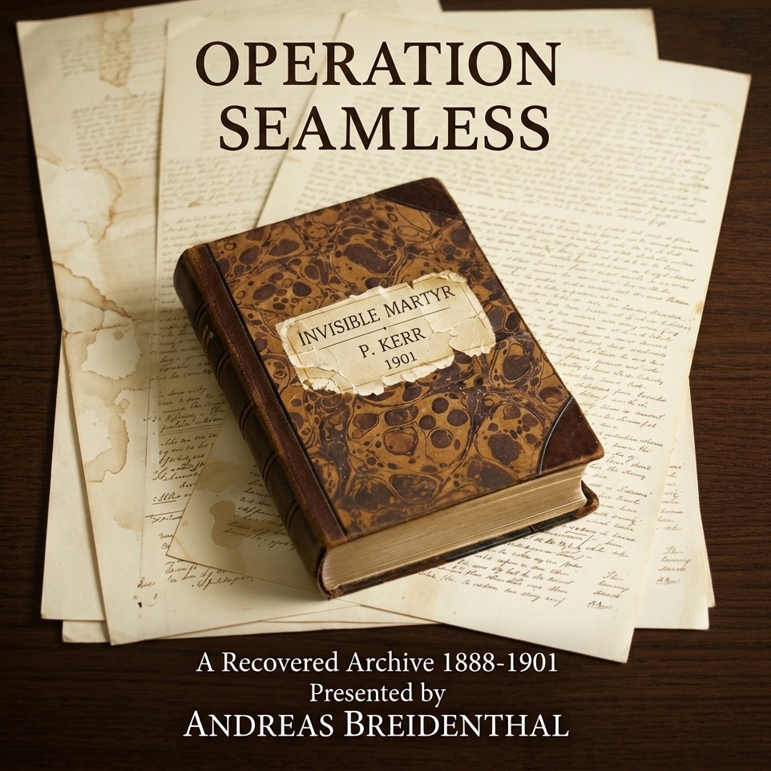

Presented by Andreas Breidenthal
Between 2021 and 2025, three separate caches of late Victorian documents were recovered during renovation works at properties in Aldgate, West Ham, and Chigwell.
The materials include first-person testimonies, internal memoranda, press clippings, and private correspondence. They reference individuals absent from surviving registries, and events not recorded in official archives. Yet the physical characteristics — ink, paper, handwriting, and concealment methods — are consistent with the period they claim to represent.
The collection has been transcribed and presented here in the order the materials were discovered.
Six months have passed since the affair on 25 November 1888 in Hand Alley, or New Street, as it is officially known, and the printed accounts of the deaths of Constable Reeve and Sergeant Melrose were wholly contrary to what occurred.
The papers were unanimous that Reeve had gone mad, that he was the Whitechapel butcher himself, having gone so far as to cut his own initials into Fenwick's flesh, and that he'd murdered his sergeant next, after receiving a mortal wound himself. In my shop the morning following, every man who came through the door was accusing the force of harbouring the monster. I know for a certainty that there was no truth in it, for both Reeve and Melrose were slain by Percival Kerr. The very fact of my being present has prevented me from bearing public testimony.
My trade had failed altogether that autumn, leaving two bills of £8 2s. and £6 14s. dishonoured at the bank and my stock under warrant for rent. Being without money or credit, I went out after midnight, intending to force the upper window of the Magpie and take whatever coin lay in the till.
The night was very foggy, and having come in from the Bishopsgate side, I climbed the wall and steadied myself on the stone cornice above the taproom window with an iron crow in my hand, about to force the first floor sash.
I almost had the window open when I heard footsteps from the far end of the lane. When the steps halted at the bend below, I shifted along the ledge to look down. I saw Constable Reeve with his open bullseye lantern, standing over a woman's body on the flagstones. I knew the constable by sight from his beat, and I found out later from the papers who the woman was.
Reeve placed his lantern upon the cobbles and knelt down. Then he drew his pocket watch, and held it alongside the cuts upon her neck. He then laid hold of her right sleeve to turn her over, and staggered back as the hand came away in his grasp.
While Reeve still held the severed hand, Melrose came round the corner behind him. Hearing him approach, Reeve scrambled to his feet. When Melrose stepped into the light, he caught sight of what the constable held, and started back with a cry. His foot struck the lantern, sending it against the kerb where the glass shattered and the flame went out, leaving the passage in darkness.
I could hear them groping about for a moment before a voice hailed them from the mouth of Rose Alley. A lucifer was struck, and a small wax candle lit. By that flame I recognised Percival Kerr. His portrait had been in all the weekly sheets on his leaving the force, and he stood quite close, watching the two men without making any motion to assist. A heated altercation ensued, before Kerr set down the taper, and closed upon them with an open blade. The two officers grappled with him briefly, but had soon both fallen to the paving. Kerr retrieved his taper, and having blown it out, turned and walked toward Bishopsgate.
I remained upon the ledge until his tread had died away, and then dropped down and fled back to Aldgate, where I shut myself in until daybreak.
By morning, the rumour was abroad that Reeve had butchered the woman and that the two officers had destroyed one another.
I set this down as true, and will swear to it. And may God help me if any false accusation ever fall upon me.
I never knew the face of the woman who bore me, nor if she ever gave me a name. They told me I arrived at the parish workhouse in London sometime in the winter of 1881, swaddled in a blanket too fine for the place. I was entered into the ledger as "Boy, Approx. Age: 0," and that was how I was defined for the first few years of my life.
There was little outright cruelty in the place; it was mostly just indifference. The walls were damp, the food was grey, and the days were measured in chores. I scrubbed floors and carried coal before I could read or write, and had learned very early to keep my thoughts to myself. Names were not used unless necessary, so I was called "boy," "you," or "that one."
I remember the reek of boiled cabbage, and the tasteless broth that was served each day. I remember the cracked tiles in the corridor, the way the light never quite reached the corners, and the sound of coughing in the dormitory at night. I remember Clara. She was older than me, quiet and watchful. I don't recall her ever speaking to me, but she once gave me half a crust of bread when I was too weak to stand. I never forgot her face.
I still do not know what made me run. It might have been the cold, or the silence. Or perhaps it was the way the matron looked at me with weariness one morning, as if I were already fading. I was seven years old and had no plan. I simply slipped through the gate behind a delivery cart one day, and kept walking until I found myself in Bishopsgate.
It was louder and dirtier there, but it was alive. The streets were narrow and crooked, bustling with dray-carts and shouting mongers, and the people were heedless. I learned quickly how to sleep in alleys, how to steal bread without being seen and then vanish when the constable turned the corner. I became a shadow, trusting no one and keeping my own company, but I survived.
And then came the night of 25 November 1888.
The night of 25 November 1888 is seared into my memory. The air was chilly, and a damp fog had been hanging low over Bishopsgate all day. I found shelter in Rose Alley — a narrow, crooked passage behind a row of shuttered shops. It was the driest place I could find that night, and the alcove near the wall was just deep enough to curl into.
I couldn't sleep. To this day, I cannot explain it, but something just felt wrong.
A little while after I had settled myself, I heard voices coming from the far end of the alley. They were harsh, broken, like two men in a violent argument.
I curled myself tighter into the alcove, and held my breath.
Then one voice rose above the other. It was wild, almost frantic.
"I… I, Jay Thompson Rivers…" He sounded like he was crazed, babbling something about being a policeman, then he raised his voice even more, and shouted: "I am Jack the Ripper!"
Then there were sounds of a struggle: boots scraping, metal clattering, someone gasping for breath, followed by a dreadful silence.
I stayed, curled in a frightened ball, until morning.
The police found me there just after dawn. They asked a lot of questions, but all I could tell them was the little I'd heard, including the names and the shouting: ‘I am Jack the Ripper.'
I couldn't tell if they believed me or not, because they told me I didn't need to worry my head over it.
Then they took me back to the parish workhouse, where, only a few days later, I was told to pack my things again. A man from a charitable mission had come to collect me. He had a kind face, but he didn't look at me much. He just signed a paper, nodded to the matron, and led me out.
I was taken to a boarding school run by one of the city's missions. It was a modest establishment, but it was clean and the food warm. The boys all wore uniforms, and the teachers spoke softly, even when they were angry.
It was at this school that I was first given a proper name.
Henry Swift.
I was a quick learner, and before long, I was up to the same level as the other boys my age. I learned how to sit still and how to answer questions in very few words. I never spoke about that night in Rose Alley, but I never forgot.
I left the school at sixteen with a handshake from the headmaster, and a reminder to be grateful.
I found work soon after — a junior clerk at the General Register Office in Somerset House, where the ledgers of births, deaths, and marriages lay stacked in endless ranks. I spent my days filing certificates and fetching volumes. I was mostly left to myself, which suited me fine.
The building was full of paper: births, deaths, census rolls, parish registers. Stacked in boxes, bound in cracked leather, tucked into drawers no one had opened in years. Occasionally, I was sent across the city, sometimes to the Public Record Office in Chancery Lane or to the British Museum Reading Room. These errands broke the monotony and opened up an entirely new set of archives to search.
I learned the system quickly, and before long, I knew when the reading room would be empty, and how to search without being seen.
Soon I was narrowing my search for one name: Jay Thompson Rivers — but across all the registers and records, I found nothing. It was as if he had never existed.
One day, in the course of my work, I was sent to collect some samples of printed registration forms at a warehouse in West Ham. It was a routine assignment — a batch of newly printed materials destined for regional offices, stored offsite by one of the firms contracted by Somerset House. I took the train east, walked the last stretch past rows of soot-stained terraces, and found the building tucked behind a timber yard.
Inside the warehouse was quiet. I gave my name, showed the paperwork, and waited while the foreman called one of the men to retrieve the sample bundle.
I recognised the man who brought the bundle immediately. He was older than I remembered, but the face was unmistakable. He clearly didn't recognise me; he simply signed the docket, handed over the forms, and turned to go.
As he turned, I said: "Jay Thompson Rivers."
He paused, then he slowly turned and looked at me.
He stared at me for a long moment. Then nodded once, his face still expressionless, and walked away.
I could not sleep that night. The man I'd seen was the same police constable who had found me on that dreadful morning.
I needed to find him again, away from the warehouse. The only sure way to do that was to live in his neighbourhood.
I found a room to let on the corner of Milton Road and Tower Hamlets Road. It was a small second floor room with a cracked window and a coal stove that smoked horribly. But it got me closer to the one man who would have answers for me.
Each evening, I walked the streets. Past the timber yard and the rail sidings, past the warehouse with its soot-stained bricks and iron shutters. I became a regular sight around the area.
It was a few days before I saw him again, walking home from the warehouse. But over the following weeks, brief greetings became short conversations, about the weather, the trains, the state of the streets. I learned his name was James Harvey, and when I mentioned my room on the corner of Milton Road, he told me he lived just down the terrace.
Then, one evening, as we crossed paths near the grocer's, Harvey paused.
"We're having stew tomorrow," he said. "Stop by and share it with us, if you like."
I arrived just after six. The house was modest and the windows were warm with lamplight.
The door was opened by a woman in her thirties with an apron around her waist and her hair pinned up. Behind her, the sound of children echoed through the house.
"You must be Mr. Swift," she said. "James said you'd be joining us."
She stepped aside, and I entered.
Harvey appeared from the kitchen with his sleeves rolled up and his face flushed from the stove.
"Come in," he said. "We're just about to sit down."
The meal was a simple stew with bread and tea. The family's conversation was lively. They asked where I worked, and if I liked it there. I said I did, though I found the silence more agreeable than the filing.
Harvey's eldest son asked if I'd always lived in West Ham. I said no, I'd not long moved in. He wanted to know why, so I told him it was quieter here than where I had been living. That seemed to satisfy him.
The youngest spilled tea, and the eldest daughter asked if I'd ever seen Queen Victoria. I said I hadn't, but I'd once seen a man who claimed to have met her gardener. That earned a laugh.
Harvey said little during the meal. He watched and listened, then when the plates were cleared and the children sent to bed, he gestured toward the sitting room.
"Come through," he said.
The room was dim and a coal fire crackled in the grate.
Harvey sat with a sigh and rested his hands on his knees. I took the chair opposite, but neither of us spoke for the first few moments.
"The first day I met you," I said, "wasn't in West Ham."
Harvey lifted his gaze from the fire.
"It was in Bishopsgate," I continued. "Almost thirteen years ago. I was seven. Homeless. Hiding in Rose Alley."
He was looking directly at me now, but remained silent.
"I heard a voice," I said. "A man shouting. Claiming to be Jay Thompson Rivers. And then — ‘I am Jack the Ripper.'"
I paused.
"It was you who found me the next morning," I said. "When I saw you at the warehouse, I recognised you immediately."
"I remembered you too," he said. "But I couldn't speak. Not there in the warehouse. Not after everything."
Harvey leaned back in his chair. He looked older in the lamplight — weary.
"I didn't know who you were," he said. "Just a child curled up in that alley. You were lying still — eyes wide. I thought you were dead at first."
He was gazing into the fire again.
"I found the bodies," he continued. "Clara Fenwick. PC Reeve. Sergeant Melrose. All of them in that narrow street. Pools of blood on the cobbles and splattered on the walls."
He shuddered at the memory of it, then went on.
"Reeve was clutching that ghastly pocket watch, engraved with the letters 'J.T.R.' There was something uncanny about the whole scene. To this day, I cannot say what it was."
I leaned forward. "So you wrote the report?"
He nodded. "I did. I wrote what I saw, what I heard, what you said, just as I did with any crime scene. I handed it in, then everything changed. They told me I'd acted rashly, that I'd jumped to conclusions, that I'd been misled by a frightened child."
Even now, as he sat across from me in his sitting room, the look of bewilderment on his face was piteous.
He reached into a drawer beside him and pulled out a sheet of paper. It was a dismissal notice dated July 1889.
"They said I was unstable, that I'd lost judgment, and that I wasn't fit for duty."
He handed it to me.
"And then," Harvey said quietly, "Kerr stepped in."
I looked up. "Who's Kerr?"
"Percival Kerr," Harvey replied. "Retired Chief Inspector. Old guard. He was the kind of man everyone respected. When this happened, when Reeve and Melrose died, Kerr came back. He said he was helping the Home Office… helping the force survive the scandal."
He opened the drawer again and took out a second document. This one bore no seal or header. It was just a handwritten letter — a personal letter from Percival Kerr.
It was offering Harvey a warehouse post in West Ham. Easy work, and far from Bishopsgate and Whitechapel.
And it ended with a warning: "Let sleeping dogs lie. Speak of this no more, and you may yet find peace."
I read it through twice before placing it down beside the dismissal notice.
The fire had dwindled to embers, and the room had grown quiet.
"I've been searching," I said. "But I was chasing a ghost."
Harvey looked up, one brow raised.
"I heard a name that night," I continued. "I thought I heard 'Jay Thompson Rivers.' I must have misheard."
Harvey nodded.
"I wouldn't have expected much more from a cold, frightened seven-year-old," he said. "I already knew his name anyway. It was James Thomas Reeve."
"I have scoured every ledger, roll, and register, searching for someone who never existed," I said, wryly.
Harvey leaned forward, elbows on his knees.
"Well, Reeve existed," he said. "So did Melrose. So did Clara Fenwick. I saw all three of them, lying in a hideous mass on the cobbles of New Street. I wrote what I saw, then I was told I'd been too hasty, and that I'd caused a scandal."
I took out my notebook, and opened a fresh page.
"Let me take down their full names," I said, "and I'll search properly this time."
Harvey spoke slowly.
"PC James Thomas Reeve. Sergeant Arthur Melrose. Clara Fenwick."
I wrote them down carefully.
"I'll start tomorrow," I said. "Somerset House holds registers going back decades, so they should all be there."
"I hope you find what you're after," Harvey said. "I've tried to forget it all, unsuccessfully."
The next morning, I arrived at Somerset House just after eight. The corridors of the General Register Office were quiet, and the clerks were settling into their routines.
I began my search with the birth registers, but I could not find a single one of the three names I had written down: James Thomas Reeve, Arthur Melrose, Clara Fenwick.
I checked the death indexes, the burial notices, and the result was the same.
I went back through the records, this time looking for Percival Kerr. This name also yielded no results.
It made no sense that the General Register Office would hold no record of four distinct lives. I decided to search further afield, chasing the trail through every archive I could reach.
Over the next few days I visited Chancery Lane, going through the police rosters, the pension ledgers, the disciplinary logs, all to no avail.
Finally, I went to the British Museum Reading Room, where the bound volumes of The Gazette, The Standard, The Illustrated Police News were all stored.
Nothing.
It was as if someone had gone through the ledgers with a scalpel and excised them from existence.
Later that week, I returned to Harvey's house. He greeted me warmly, and led me through to the sitting room.
"I searched everything," I said. "Every register, every roll, every archive, and there's not a single record that these persons ever existed."
I paused. "Even Kerr. He's gone too."
Harvey frowned. "How is that even possible?"
I stared into the fire. "I couldn't believe it either," I replied. "I'm beginning to think it wasn't just your report they buried. It was the very existence of the people involved."
Harvey leaned back. "You think someone has erased them from history?"
"That's it," I said. "Completely erased."
Harvey sat with his hands clasped, staring into the fire, and frowned. "Kerr was high-ranking. He should be everywhere."
"I thought the same," I said. "But he's vanished too."
Harvey was quiet for a long time.
"If it was Kerr who shut me down," he said, " then he must have been the one who erased them from history… but that doesn't explain why he's been erased."
"On the contrary," I replied, "that probably explains exactly why he has been erased."
Harvey looked up. "Of course," he said. "But that doesn't help your search... unless."
He paused.
"Maybe he left something behind."
"You think something might've slipped through?" I asked.
"There was a letter," Harvey went on. "The one that got me the job. Someone must have contacted the firm to arrange it."
I leaned forward. "Do you think it's still there?"
Harvey shrugged. "If it is, it'll be in the archives at the warehouse. In the personnel files, or correspondence. It wouldn't be easy to find."
"Then I'll keep looking till I find it."
Harvey raised an eyebrow. "They won't let you in."
"Not during the day, they won't," I said.
Harvey looked me in the eye. "You won't be going alone."
The warehouse was quiet. We entered through an unrepaired window behind the loading bay. Harvey led the way through the narrow corridors, lined with crates and ledgers, until we reached the archive room.
Inside, the shelves stretched from floor to ceiling. There were boxes labelled in fading pencil and files bound with twine.
Harvey knew where to look, and he soon found the personnel box from 1889. He pulled it down and carried it across to a desk in the corner.
We opened the box and began hunting through the bundles of correspondence. We had been in the room for at least an hour when we finally unearthed a letter of inquiry for a clerical role, dated shortly before his hiring. It was signed with a name neither of us immediately recognised, but it bore a return address.
Then there was a second letter. This one was a recommendation, introducing Harvey to the firm. It was signed by the same hand.
"Kerr didn't write these," I said.
Harvey nodded. "He had someone else do it. Someone who could write without raising suspicion."
I copied the name and address, and we returned everything to its place, leaving the room as we'd found it.
We slipped out through the same window, closing it behind us.
The days that followed were quiet, but not idle.
I returned to Somerset House with a new name in my notebook, and it didn't take long to identify the author of Harvey's introduction letters as Dr Thomas Bond, police surgeon.
That evening, I returned to Harvey's house, and he opened the door before I could knock.
We sat again in the sitting room, and Harvey was clearly eager to hear what I'd discoved.
"Does the name Thomas Bond mean anything to you?" I asked.
"Thomas Bond." he said. "Dr Thomas Bond. Why, of course. Because he signed Tommy Bond, I didn't recognise the name at first."
"You knew him?"
Harvey nodded. "I knew him very well. He was well respected in the force. If he helped Kerr… this goes deeper than I imagined."
We sat in silence for a few moments.
Harvey tapped the edge of the desk with one finger. "Bond," he said. "I never would've guessed, but it means he knows something, or knew something."
I closed my notebook and looked up. "Then we should speak to him."
Harvey hesitated. "He's not well. I heard he's basically bedridden now. In his house in Westminster."
"Then we had better go tomorrow," I said. "Before this thread slips out of out hands."
Harvey looked at me for a moment.
"Right," he said. "Tomorrow."
The sun was low over Westminster, casting long shadows across the cobbled streets as we approached 7 The Sanctuary. It was a dignified residence in the terrace adjacent to Westminster Abbey.
A nurse answered our knock. She was middle-aged and brisk, but not unkind.
"We're old friends of Dr Bond," Harvey said. "We heard his health was failing and thought we'd pay a visit."
She studied us for a moment, then beckoned us in.
"Come in," she said. "I'm sure Dr Bond will be pleased to see some old friends. He doesn't iften have company these days."
She closed the door behind us.
"He's in his room, on the third floor," she said, as she led us up a narrow staircase. At the top, she opened a door and stepped aside.
"He won't speak long," she said, as she motioned for us to enter.
The room was modest, and the furnishings convenient. A single bed, a writing desk, and a shelf of medical texts. The curtains were half-drawn, letting in the last of the afternoon light.
Dr Thomas Bond sat upright in bed, pale but alert. His hair was thinning, but his eyes were sharp. Harvey stepped forward, and introduced himself.
"Dr Bond… it's been a long time. James Harvey. We served together, briefly."
Bond studied him, then offered a faint smile of recognition. Harvey then gestured to me.
"This is Mr. Swift. A business acquaintance who's become a close friend."
Bond offered a polite smile, and we settled into chairs.
The conversation began lightly. Harvey and Bond discussed old cases and familiar names for several minutes before I joined in.
"Dr Bond," I said, "do you recall a Chief Inspector named Kerr?"
Bond's pallid face grew even paler, and his hands began to tremble. His eyes moved from Harvey to me, then back again.
"I'd hoped you wouldn't mention him."
He adjusted the blanket over his lap.
"Kerr asked me to write two letters. One to inquire about a position at the firm, and another to introduce you, Mr. Harvey. He said you'd made an error in judgment… that you needed to be relocated."
He was looking at his trembling fingers.
"I didn't know any details. I was told it was a matter of internal discipline, under the guidance of the Home Office."
He paused, then added more softly: "I never meant harm. Kerr was a busy man. He asked for a simple favour."
He glanced up at Harvey.
"He said you'd misjudged something… that you needed a fresh start."
He paused again.
"Have you had trouble?"
Harvey smiled gently.
"I've enjoyed the position, Doctor. It suits me. I'm grateful you helped me into it."
Bond was visibly relieved.
"I'm glad to hear it. I always thought you'd do well there."
"Dr Bond," I said, breaking the brief silence. "When was the last time you spoke with Chief Inspector Kerr?"
Bond glanced at me, then looked back down at the blanket over his thin knees.
"Kerr," he said, then he paused.
"October 1889, I believe. Just after the prisoner David Cohen died."
He adjusted himself in bed, then went on.
"Kerr visited me briefly. I'd been involved in Cohen's case, and he wanted to discuss it. I don't recall the details now, but it was something about the circumstances of Cohen's death. That was the last time I saw him."
He looked up at us both.
"I'm not sure where he went after that."
I leaned forward slightly.
"Do you happen to know where Kerr lived?"
Bond shook his head slowly.
"No, I'm afraid not. He was always… discreet. I met him in offices and in corridors, but never at his home."
He paused.
"He wasn't one to share personal information. I don't recall his residence ever being listed anywhere."
Bond studied his hands again for a time before going on.
"I do recall — once, in passing — he mentioned a country house. Not far outside the city. He said it was quiet and secluded. A place where he could think in peace."
His eyes drifted towards the window.
"I remember the way he said it… like it was somewhere he went to disappear."
He furrowed his brow.
"I know he used to come into London by train — the Great Eastern Railway."
He closed his eyes and rubbed his temple, then lifted his head again.
"Come to think of it," he said. "I do recall Chigwell being mentioned."
He leaned back slightly, the effort of memory settling into silence.
"That's all I ever knew. He never invited anyone."
I pressed again.
"Did Kerr ever speak of any family?"
Bond shook his head without hesitation. "No. Never. He was a solitary man. Professional and composed, but… distant. If he had family, he kept them well out of sight. I always assumed he lived alone."
I leaned in slightly, my tone firm but respectful.
"Are you quite sure you never visited Kerr's home?"
Dr Bond held my gaze for a moment before replying.
"Quite sure," he said. "As I said, Kerr wasn't the sort to invite company. Wherever he had his home — in Chigwell or anywhere — I was never shown it. He kept his private life sealed."
I leaned over and placed a hand on his arm.
"Dr Bond," I said. "I haven't been entirely honest with you."
Bond looked up, puzzled.
"You introduced Harvey to the firm. You helped move him on. But you don't know why Kerr asked you to do it."
I looked him in the eye.
"I do."
Bond's brow furrowed.
"On the night of 25 November 1888, I was a homeless seven-year-old, curled up in Rose Alley."
Bond's face began to change. What little colour had returned began to drain out again.
"I heard the struggle. I heard the name ‘James Thomas Reeve.' I heard ‘I am Jack the Ripper.'
Bond began to tremble again.
"I was the child Harvey found the next morning. The one whose testimony was used as a reason to dismiss him from the force. The one Kerr would have also erased, if he had known where to find me."
I laid out everything Harvey and I had uncovered — the erasure of four persons from existence: Reeve, Melrose, Fenwick, and Kerr. I spoke plainly, tracing the thread from Rose Alley to Chigwell.
When Bond spoke at last, his voice was weak.
"I didn't know the half of it. I knew Kerr was… meticulous. But this…"
He trailed off.
"He asked me never to mention him. Not to anyone. And I haven't."
He laid his head back and closed his eyes.
"We were close, once. Friends. But by 1889, that had cooled. He came to see me one final time — after Cohen died. Said he was leaving the country. That I wouldn't see him again."
He looked up at us, his eyes hollow.
"He said… strange things were happening. That something was haunting him. Shadows. Whispers. He spoke of… supernatural phenomena."
Bond shook his head slowly.
"I thought it was madness. Psychosis. The strain of the job. I didn't follow up. I kept my word and never spoke of him again. But now… now you've come. And I see that Kerr has used me as much as he used you."
He looked at Harvey and weakly shook his head.
"You've already uncovered this much. I suppose there's no point in holding back."
His expression had changed to one of weary resignation.
"Kerr did have a country house. I visited it many times before the end of 1888. It's just outside Chigwell, near the end of the High Road. They call it Rolls House, or Rolls Park. It's part of the old Barringtons estate. It looks modest enough from the front, but it stretches back further than you'd expect. Brick and timber with ivy creeping up the walls. It certainly is a very quiet place."
Bond's gaze drifted towards the dark window again.
"After October 1889, I never went back there. He told me he was leaving, and that I wouldn't see him again."
Harvey rose first.
"Thank you, Doctor," he said.
I stood beside him, gathering my notebook.
"We appreciate your honesty."
We returned to Harvey's home in silence. The walk from Westminster to West Ham was long, but neither of us spoke.
Back inside, Harvey's wife already had the fire burning and the kettle singing.
Harvey sat slowly, and looked across at me with a hollowed-out expression.
"I think that's as far as I can go," he said.
I looked up.
"The visit to Bond… the archive room… it's enough. More than enough."
He laid his head back on the armchair.
"I've spent years trying not to remember. And now I've remembered too much."
He sat for some moments with his eyes closed, then lifted his head again.
"I've been meaning to tell you that we're moving," he said. "The lease is up. My wife wants somewhere quieter. I'm sorry to drop this on you right now, but it's all getting too much for me."
He looked at me, his eyes tired, but kind.
"I want to know the truth. I honestly do. But I think it would break me if I found it. I've learned too much already. And it's destroying me."
I leaned forward and rested a hand on his knee.
"I understand," I said.
He smiled faintly.
"I knew you would."
The news next morning was like a blow to the chest.
Dr Thomas Bond was dead.
Left briefly unattended, he had leapt from his third-floor window.
I waited outside the warehouse, then walked home with Harvey. We were silent until we reached Tower Hamlets Road.
Inside, he sat heavily in the armchair, staring at the floor.
"He was afraid," Harvey said. "I saw it in his eyes."
"He knew what Kerr had done," I said. "And he knew it couldn't be undone."
We sat in silence for a long time.
Then Harvey spoke again.
"We'll be leaving next week. I don't believe they have another tenant yet."
I looked around — the sitting room, the hearth, the worn wallpaper.
"I think I'll take it," I said.
Harvey looked up, surprised.
"I'll help you pack," I said. "And when you go, I'll stay."
He nodded slowly.
"It's a quiet little house. It served us well."
The days that followed were filled with activity. Packing crates and cases were piled in the sitting room. Harvey's children ran through the halls one last time.
It was the final evening before their departure, and the house was bare. All the crates were gone from the sitting room, and only two armchairs remained by the fire. We sat quietly, just enjoying one another's company.
"I won't be going with you," Harvey said. "You know that."
"I do," I replied.
He looked at me, then into the fire.
"But you'll need to know what you're looking for."
I reached for my notebook.
"Kerr was broad in the shoulders," he said. "Not tall, but solid. He walked with a slight limp in his left leg, I think. He always wore a long coat, even in warm weather. Dark wool. Never buttoned."
He paused.
"His hair was thinning. Greying at the temples. He always kept it neat. His face was clean-shaven. He had sharp features. Eyes like glass — not cold, but unreadable."
I scribbled quickly, trying to capture the image.
"He had a habit," Harvey added. "He'd tilt his head when listening. Just slightly. Like he was trying to hear something just out of range."
He looked at me.
"You'll know him if you see him. Even after all these years, I can't imagine he would have changed much."
"I'll find him," I said.
Harvey stood and walked to the window, looking out at the quiet street.
"I hope you do," he said. "But I also hope you're ready for what comes after."
The next morning, they were gone.
I stood alone in the doorway of 60 Tower Hamlets Road with the key in my hand.
The train from Stratford to Woodford was quiet. I carried only a satchel, a notebook, and the memory of Harvey's description.
I alighted at Woodford Station, and walked the rest of the way.
The road to Chigwell was flanked by hedgerows and the occasional flicker of gaslight from distant cottages. It was late in the day, the sun had dipped low, and a chill breeze was picking up.
I reached the edge of the property just after nightfall.
The iron gate was rusted, but intact, and beyond it, nestled in the trees, was the house. Ivy was crawling up the brickwork, just as Bond had described it. I could see no lights in the windows.
I circled the perimeter, keeping to the tree line, and found a collapsed section of fencing and settled in, hidden among the brush.
I could tell the house was not abandoned. The windows were clean, the path to the door was swept, and the ivy had been trimmed recently.
I returned to Chigwell again the following evening, just as the sun dipped behind the hedgerows. I carried a satchel with water, dried bread, a blanket, and my notebook.
I found a hollow beneath a tree and deepened it slightly, lining it with moss and dry leaves. It was shielded from wind, invisible from the house, and gave me a clear view of the rear windows and yard.
I settled in just after dusk, and made myself comfortable for the night.
The next morning, just after sunrise, I saw a curtain shift, and a figure pass behind the glass. Later, he emerged into the yard, walking with his hands behind his back, surveying the hedges.
He matched Harvey's description exactly. He had broad shoulders and thinning hair. He wore a long coat, unbuttoned, and walked with a limp in the left leg. Every so often, he would stop and tilt his head slightly, as if listening.
By the following day, I could predict his movements. He inspected the yard early, retreated to the study mid-morning, returned in the afternoon. The lamp in the study lit at seven, extinguished by nine.
He was a man of very meticulous habits.
That night, after the house fell silent, I crept closer, and discovered that the study window was slightly warped in its frame.
I returned to Tower Hamlets Road, repacked my satchel with some additional tools, and prepared for my final visit to Chigwell.
The night was moonless, and the air was still. I crept through the trees, crossed the yard, and crouched beneath the sloped awning of the study window. I slipped a thin blade between the sill and the latch; there was a quiet click, and the window slid open.
I paused, listening, but nothing stirred inside.
The room was dank and musty, with bookshelves lining all four walls. A desk sat beneath the window, with bundles of papers in neat stacks, a lamp and a clock.
Lighting a match, I could see that the door leading to the rest of the house was closed. I lit the lamp, keeping it low, and glanced around the room, checking the corners, floorboards, and shelves. In the far corner sat an old campaign chest.
The drawers were locked. Holding the lamp close, I inspected the keyholes; the second drawer from the bottom showed the heaviest wear, the timber around the brass scored with hurried scratches. Using the same thin blade, I pried the latch from the aged timber and eased the drawer open. Inside were folders, maps, and letters — all bearing Kerr's hand.
I soon had the documents spread across the desk, and began scouring through them. The breadth of Kerr's plan was audacious, yet ruthlessly and meticulously carried out. I couldn't take everything, so I selected nine pieces of damning evidence: Kerr's first-draft outline of his blueprint for erasure; the draft letter to Harvey, annotated with cold, callous notes; Harvey's original incident report, naming Reeve and the child witness; an internal police memo draft, hinting at a framing, including annotations to leak a copy of it to the press; the newspaper clipping, containing the leaked memo; Kerr's planned list of names to erase; Kerr's handwritten reflections, confirming the operation's success; a fragment of the retrieval log, listing institutions and dates records were retrieved; a letter signed by the Home Secretary, granting Kerr unfettered access to all state records.
I wrapped them in cloth, and tucked them into my satchel, then I returned everything else to its place and closed the drawer.
I checked the room once more, put out the lamp and climbed back through the window. Lowering the pane gently, I flicked the latch closed with my blade, and crossed the grass.
I boarded the train at Woodford just before five, and by the time I arrived home, the streets of West Ham were waking, and the world was resuming its ordinary rhythm.
Once inside, I set the satchel down on the table, lit the lamp, and sat in Harvey's old chair. Harvey was gone, Dr. Bond was dead; there was no one left to corroborate what these records proved, and to take them directly to the authorities without a complete chain of proof would have been foolhardy. If the evidence was to survive, it needed an undeniable account that reached back to the night of 25 November 1888.
Before writing such an account, I needed to ensure the safeguarding of the documents I had taken, so I lifted the floorboard beneath the stairs and made a dry, secure hiding place. That is where the documents remain as I write. Over the next week, I sat writing, night after night, and now, this night, the record stands whole. All that remains is to submit the evidence, along with this account, to the authorities.
I hereby swear that all I have set down in the preceding pages is true and accurate to the best of my knowledge.
The object to be accomplished is the total excision of the occurrences of the twenty-sixth day of November, eighteen hundred and eighty-eight, from the historical record, to the intent that no entry, recollection, or subsequent inquiry shall ever bring them to light.
In the first instance, the general inquiry into the Whitechapel murders must on no account be suffered to reach a formal conclusion. Popular doubt and division are to be maintained through discreet communications to the press, and suspicion directed toward alternative characters selected from the ranks of the mentally afflicted and the criminally obscure. Public speculation must be permitted to run its course without hindrance, while all final resolution is steadily denied, so that the terror attached to the name of "Jack the Ripper" remains permanently an unsolved enigma.
All persons possessing knowledge or suspicion of the occurrence must be sought out and rendered harmless, their circumstances being altered through official dismissal, removal to distant parts, or quiet discredit. Proceedings must commence with Constable James Harvey, whose separation from the Force and subsequent settlement in private employment away from the metropolis must be quietly secured.
The recovery of all original papers bearing upon the matter—including police occurrence reports, coroner's depositions, early press proofs, and departmental memoranda—must be carried out under plausible official pretexts. Every withdrawal must be conducted with such caution that no receipt, ledger entry, or docket of extraction is permitted to remain in any public or institutional repository. The materials, once secured, are to be consumed by fire or reduced to pulp, care being taken that neither duplicate, transcript, nor the smallest fragment of residue is suffered to survive.
The names of Police Constable James Thomas Reeve, Sergeant Arthur Melrose, Miss Clara Fenwick, and myself, Percival Kerr, late Chief Inspector, are to be expunged from all registers whatsoever, whether of the police service, the parish rolls, the electoral lists, the medical establishments, or the public prints.
The sequence of the official records before and after the event must be drawn together without a visible seam. Ordinary promotions, transfers, and retirements throughout the divisions are to be so arranged as to account for all vacant numbers and roster entries, leaving no apparent interruption or anomaly upon the face of the books.
My own part in the service must be suffered to perish with the rest. No notice of my retirement shall appear in the Police Orders or the Gazette, no pension or testimonial is to be claimed, and no obituary, memoir, or public record of my thirty years' service shall ever be preserved.
By these means, the official books will present no appearance of alteration or suppression, the design being not merely to conceal the facts, but to ensure that the record stands as though the occurrence had never transpired.
Harvey,
Your connection with the City Force having been brought to an end, you will understand that your future welfare rests entirely upon your own good sense.
Employment has been found for you at the warehouse of a commercial firm in West Ham. The wages will support your household, and the work is sufficiently removed from the City to afford you a quiet life, provided you conduct yourself with sobriety and keep your own counsel.
You must be sensible of the fact that your conduct in the affair at New Street placed you in the gravest peril. The public has no sympathy for a man who persists in wild assertions that cannot be substantiated, and any attempt to revive the matter would bring disaster upon the Force, and utter ruin upon yourself and your family. Great forbearance has been extended to you; see that you do not compel the authorities to view your case in a harsher light.
Let sleeping dogs lie.
Speak of this no more, and you may yet find peace.
I beg to report that at about 4.15 a.m. this day, whilst on duty on my beat on the eastern side of Bishopsgate, I turned into New-street, where, by the light of my lantern, I discovered three persons lying upon the cobbles near the Magpie public-house, all appearing to be dead.
The first was a woman, since identified as Clara Fenwick, whose throat was severed and her person shockingly mutilated. Lying close beside her was Police Constable James Thomas Reeve, dead, with his regulation silver pocket watch gripped in his right hand. The casing of the watch bore the engraved initials "J.T.R.", and the incisions upon the woman's body appeared to have been made in grotesque resemblance to those letters.
A few paces distant lay Sergeant Arthur Melrose, also deceased, having sustained fatal wounds to the head and throat, apparently received in a violent struggle. Several surgical blades and scalpels were found lying scattered upon the stones between the bodies.
I immediately blew my whistle for assistance, remaining by the bodies until the arrival of the night inspector, the relief constables, and the Divisional Surgeon.
Subsequently, after day had broken, during a search of the adjoining passages, I entered Rose-alley, where I discovered a vagrant boy huddled in an alcove. He was in a state of great terror, and upon being questioned, stated that earlier in the night he had heard sounds of fighting, and that a man had cried out the name "Jay Thompson Rivers," and shouted, "I am Jack the Ripper!"
Connecting the statement of the boy with the position of the bodies and the watch found in the Constable's grasp, I formed the conclusion that P.C. Reeve was the assailant, and that Sergeant Melrose lost his life in the execution of his duty whilst endeavouring to apprehend him.
With reference to the lamentable occurrences in New-street on the morning of yesterday, and the identification of Police Constable James Thomas Reeve among the dead, the following observations are submitted for immediate guidance.
It has been represented by officers of the Detective Department that the circumstances attending the death of Police Constable Reeve are by no means so conclusive as preliminary reports suggested. The possibility has arisen that a person of unsound mind, perhaps bearing a personal grievance, may have sought to emulate the methods of the Whitechapel murderer (the so-called "Jack the Ripper") in order to cast suspicion upon the deceased Constable.
While no definitive conclusion can yet be formed, and the matter remains under active inquiry, the supposition is held to warrant serious attention. Officers of all ranks are strictly enjoined to exercise the utmost caution in their statements, and to refrain entirely from speculation until such time as further facts may be established.
This communication is strictly confidential, and on no account to be imparted to the public or the representatives of the press.
By Order of the Superintendent.
The terrible tragedy discovered in New-street, Bishopsgate, on Monday morning—where Police Constable James Thomas Reeve and Miss Clara Fenwick were found slaughtered upon the cobbles, and Sergeant Arthur Melrose lay butchered beside them—has taken an extraordinary and unexpected turn, which has thrown the public mind into the wildest state of perplexity and alarm.
It will be in the recollection of our readers that Monday's evening prints boldly proclaimed that the Whitechapel demon had at last been unmasked, and that the monster had worn the blue coat of the police force all along. This terrible conclusion was accepted with shuddering credulity throughout the Metropolis, resting as it did upon the circumstance that the dead constable was found clutching his regulation silver watch engraved with the letters "J.T.R.", and that the dreadful incisions upon the woman's person bore a hideous resemblance to those identical initials. It was universally believed that Sergeant Melrose had surprised his comrade in the very commission of the butchery, and that both had fallen in a desperate struggle to the death.
Now, however, a most remarkable confidential document has fallen into our hands, which shatters the accepted theory and re-opens the whole dreadful mystery.
The document in question, which bears the date of Tuesday, 27th November, was issued from the Superintendent's Office at Bishopsgate Police Station, marked "Confidential," and circulated among the senior officers of the division. In this communication, the authorities openly cast doubt upon the guilt of the dead constable. It is suggested that the circumstances attending Reeve's death are by no means conclusive, and the startling theory is advanced that a "person of unsound mind, perhaps bearing a personal grievance," may have deliberately emulated the atrocities of the Whitechapel assassin for the express purpose of fastening suspicion upon the unfortunate officer!
The circular concludes by strictly enjoining all officers to exercise the utmost caution in their statements and to refrain from public speculation, as the matter remains under active inquiry.
The public, however, will not be silenced. If Constable Reeve was not the perpetrator of this butchery, who was? Were both Reeve and Melrose struck down by a third man—a ruthless assassin who arranged the watch and the wounds to defame the dead constable? And if so, does the Whitechapel monster still walk the streets of London, ready to strike down fresh victims under cover of the fog?
Our representative made application both at Bishopsgate Station and at the Chief Office in Old Jewry yesterday, but the police authorities preserve the strictest reticence, and no statement whatever was vouchsafed. In the East-End, the agitation is hourly increasing, and the dreadful question is once more on every lip: Is the murderer dead, or has the Metropolis been duped by a deeper and more hideous deception?
1. P.C. James Thomas Reeve
Principal in the New-street affair.
2. Sergeant Arthur Melrose
Deceased in attempted apprehension.
3. Clara Fenwick
The female victim.
4. Percival Kerr
Late Chief Inspector.
Persons to be Observed.
The child witness (Rose-alley)
Furnished verbal statement implicating Reeve. Identity unknown; left with the parish. No action unless rediscovered.
James Harvey (late P.C. 5045)
Reporting officer at New-street. Dismissal from the Force executed; placed at West Ham warehouse. Harmless while silent; to be watched.
Dr. Thomas Bond (7, The Sanctuary)
Procured the letters for Harvey. To be watched for signs of nervous instability or indiscreet speech.
I. The Public Mind.—Public certainty has been broken. Reeve's guilt is no longer accepted as fact, suspicion having been successfully divided between an unhinged imitator and transient foreigners. Press speculation is sustained, while the Whitechapel inquiry remains open and unresolved.
II. Restraint of the Witness.—Harvey has proven tractable. His discharge from the Force was effected on 1 July, masked by the general augmentation of the City establishment, and the warehouse post at West Ham entered upon. He preserves his counsel and has made no public statement.
III. Destruction of Papers.—The station occurrence sheets, divisional reports, and coroner's depositions have been recovered from the repositories without receipt, together with early press sheets and departmental copies. All have been consumed by fire; neither duplicate nor transcript survives.
IV. Expunging of the Names.—Reeve, Melrose, and Fenwick are wholly removed from the official registers, so that no record of birth, service, or death subsists at Somerset House, Old Jewry, or in the parishes. Rate books, voting rolls, and census schedules have been amended, and the files of the press cleared of their names.
V. My Own Withdrawal.—My retirement stands completed without notice in Police Orders or The Gazette. Seclusion at Rolls House is entered upon, and all communication with the City severed. The record stands unbroken; the work is complete.
Metropolitan Police Office (4, Whitehall Place)
City Police Chief Office (26, Old Jewry)
General Register Office (Somerset House)
Newspaper Room, British Museum
Coroner's Office, City of London (Golden Lane)
Whitechapel Union Workhouse Infirmary
Sir,
In consequence of the grave public perplexity attending the recent atrocities in the East of London, and the urgent necessity of reviewing under a single view the whole of the proceedings, informations, and departmental records connected therewith, I have thought fit to commit to your hands the preparation of a comprehensive and strictly confidential Report for my personal guidance.
To this end, you are hereby specially authorised and empowered to call for, inspect, and examine all such occurrence books, registers, divisional reports, depositions, and official papers as you may judge requisite for the thorough prosecution of your inquiry.
I have accordingly to request and require that the Commissioners of Police for the Metropolis and the City of London, the Registrar-General, the Coroners of the several jurisdictions, and the keepers of all public repositories, infirmaries, and archives, will afford you immediate access and every necessary facility in the execution of this service.
The critical posture of public affairs requires that the utmost circumspection be preserved. In order that your proceedings may remain unembarrassed by rumour or departmental hindrance, your discretion is wholly relied upon, and no minute, docket, or notice of this authority shall be suffered to appear in the ordinary returns of this Office.
I am, Sir,
Your obedient Servant,
Rolls House — 8 June 1901
There reached me only yesterday the intelligence of the death of Dr. Thomas Bond, a gentleman who was known to me in the closest possible manner during the years of our common service in the metropolis, and who proved himself at all times to be a true and steadfast friend; being indeed one of the very few individuals within the circle of my acquaintance who possessed an adequate understanding of the heavy burden which an absolute silence imposes upon a man who has had the conduct of grave and confidential matters. In the period which has elapsed since my departure from the Department, I deliberately suffered our communication to diminish and finally to cease altogether, having adopted that course solely from a desire to ensure his own protection and peace of mind; and it is a reflection which must now remain with me to the end of my days that I shall never ascertain whether he entertained any suspicion of the true state of the case, nor whether, had the circumstances been fully laid before him, he would have found it in his heart to excuse the coldness with which I met his former regard. It remains only for me to observe his passing in the quietness of this room, without that outward display of mourning which would ill become one who has long been dead to the world.
A period of nearly twelve years has now elapsed since I determined upon an entire withdrawal from public life and took up my residence within this house, which, by securing me against the observation of former colleagues and preserving the secret of my retreat, has kept my silence during the whole of that interval; though, as infirmity advances with my increasing years, I am sensible that I cannot tell how much longer its walls may continue to afford me that protection. There have been occasions during the composition of these sheets when I have questioned whether the labor of setting down an account of these transactions might not be regarded as an imprudent or even a foolhardy undertaking for an officer in my position, yet I am bound to acknowledge that the steady employment of the pen has served in no small measure to compose and regulate my mind throughout the long course of these solitary years. Concerning the eventual disposition of these papers, I do not know whether they will ever be brought to light, nor do I entertain any wish that they should be; and it is my purpose that they shall remain deposited in a secluded place among my effects, where they may perhaps lie undisturbed for a decade or two, or possibly even for a century, before any human eye shall light upon them—by which time the silence of this house will have done its work, and the years of solitude which I have endured will have answered whatever end was required of them.
Chigwell — 18 July 1885
On the evening of the 18th of July, 1885, being then upon a few days' leave of absence from my duties in London, I had occasion to dine with Colonel Richard Lloyd at his residence; and toward the conclusion of the evening, when the rest of the household had retired and we were seated together in his study over a glass of his brown sherry, our conversation turned by degrees from the management of local affairs to the subject of family property in the county. In the course of this discussion, the Colonel spoke with a great deal of ancestral feeling regarding a certain dwelling known as Rolls House, situated upon the outskirts of the parish of Chigwell, which had remained in the possession of his family for several generations, but which, by reason of the departure of the former tenant, Edward Ball, Esq., in the autumn of 1883, had since that time stood entirely untenanted, with no immediate prospect of a suitable occupant.
For the better part of the preceding twelvemonth, the question of my own eventual retirement had occupied a considerable share of my private thoughts; for having entered the Metropolitan Police in the summer of 1855, I was now completing my thirtieth year of service, a period during which an officer may be reasonably supposed to have learned the practical utility of looking well ahead before he is actually called upon to surrender his charge. It was my intention to discover some modest establishment somewhat removed from the incessant hurry and noise of the capital, yet within easy reach of the Central Office should any matter connected with the Department require my attendance; and while I had always entertained a private partiality for a dwelling that possessed something of a storied past, I was particularly desirous that it should not be burdened by those ancient family complications and local entanglements which so frequently render such properties troublesome to an outsider.
Upon my mentioning these requirements to Colonel Lloyd, he was good enough to suggest that Rolls House might very well answer my purpose, and proposed that I should inspect the property on the following morning; a proposal which I readily accepted, it being agreed that we should meet at the lodge gates at eleven o'clock.
The estate, as I found upon our arrival, lay situated at the extreme edge of Chigwell, surrounded by mature timber and partially enclosed by a substantial brick wall, over which a heavy growth of ivy had been permitted to spread with considerable freedom. The gravel carriage-sweep curved gently from the roadway toward the principal entrance, where the projecting gables gave a heavy, somnolent character to the front elevation, while the brick chimney-stacks, though weathered by long exposure, stood erect and showed no signs of structural failure. The perimeter hedges, notwithstanding two years of uninterrupted growth, bore evidence of having been regularly trimmed and maintained under the previous tenancy; and although the main iron gate hung somewhat out of the true by reason of a slight settlement in the lower hinge, the metal itself remained sound and free from decay. The whole place, indeed, possessed that quiet and unpretending dignity which one is accustomed to associate with the residence of a gentleman of independent means.
Upon conducting our inspection within doors, I observed that the principal staircase was of solid oak, broad in the tread and worn perfectly smooth by long use; while the room which I intended should serve for a private study—having a wide window, partially shaded by the exterior ivy and looking directly upon the rear garden—was remarkably free from damp, quiet, and sufficiently furnished for immediate occupation. Having completed the survey of the domestic offices, I excused myself from the Colonel and walked the boundary of the yard and grounds alone. The stabling and out-buildings were structurally sound, requiring very little beyond a coat of lime-wash to put them in working order, and the old walled rose-garden, though choked with nettles and long grass, still retained its gravel paths in such condition that a few days of steady labor would suffice to bring it into proper cultivation.
The property was altogether deficient in that ornamental elegance which distinguishes many of the older county seats, but there was an enduring order and solidity about the disposition of the buildings and the boundary walls which commended itself strongly to an officer of my habits. Having satisfied myself upon every point of detail, I entered into the necessary arrangements with the Colonel's solicitors with the least possible delay and without attracting local attention; and the agreement having been concluded upon mutually satisfactory terms, I removed my personal effects from London and entered into possession before the expiration of the week.
Chigwell — 1885 to 1888
Throughout the three remaining years of my active connection with the Force, the daily journey between Rolls House and the station at Bishopsgate settled into a fixed and unvarying course, from which I found neither occasion nor inclination to deviate. It was my invariable practice to quit the front porch at a quarter before seven in the morning, which allowed me precisely twenty minutes to reach the platform at Woodford; though in the winter months, when the frost lay thick upon the Essex hedgerows and the low-lying mist from the fields hung across the lanes, the heavy condition of the roadway occasionally required a few minutes' additional allowance for the footing. These solitary morning walks afforded me an opportunity for consecutive thought which an officer charged with the superintendence of criminal matters can rarely secure within the walls of a busy divisional station; for the habit of orderly reflection, upon which all sound police administration must ultimately rest, is difficult of cultivation amid the constant arrivals of charge sheets, the complaints of the public, and the perpetual interruptions of subordinate officers.
The service of trains provided upon that section of the Great Eastern Railway was, taking into account the well-known administrative difficulties and imperfections of the Company, conducted with a degree of punctuality that left little ground for complaint; and it was my custom upon the arrival of the up-train to secure a seat in the second carriage from the engine, on the left-hand side, facing the direction of travel. From this position, as the train moved away from Woodford, I was able to observe through the window the gradual change in the landscape, the quiet rural undulations of the Essex hills giving place by degrees to the continuous brick terraces of the outer parishes, which in their turn merged into the extensive goods yards, warehouses, and gasometers bordering the line, until the journey terminated beneath the smoke and spires of the East End. The run occupied exactly thirty-seven minutes, an interval which I invariably employed in perusing the printed police circulars and the morning reports, looking up only from time to time as the train passed the recognized landmarks along the route.
Upon alighting at the Liverpool Street terminus, I proceeded directly on foot along the thoroughfare to the police station at Bishopsgate, passing the door and taking my place at my desk without fail by half-past eight. To a man who has passed his youth and prime in the public service, the adherence to an exact system is not merely a personal preference, but the essential foundation without which no official business can be carried to a clear issue; for if an officer permits irregularity to enter into his daily habits or his reckoning of time, it is impossible that he should preserve that steady, dispassionate view of circumstance which the service continuously demands.
It was during this same period, as indeed it had been throughout the greater portion of my career, that I maintained an independent series of notebooks and memoranda, kept under lock and key quite separate from the official ledgers and divisional occurrence sheets. While the regular entries required by the regulations of the Department were maintained with that strict accuracy which was my duty to the Commissioner, my conscience was never thoroughly at ease until I had transcribed into my own registers those small particulars, cross-references, and dates which, though considered trivial by the clerks at the Central Office, were often of the highest value in connecting isolated events. To trace over a course of years the reappearance of an alias in a different quarter of the metropolis, or to record the sudden and unexplained disappearance of an individual who had long been the subject of our surveillance, afforded me an intellectual satisfaction of an entirely distinct kind; and the systematic arrangement of these entries, showing at a glance the unseen undercurrents of the town, was a matter to which I devoted the most scrupulous care.
The return journey toward Essex at the close of the day was performed with the same adherence to timetable. Leaving the Bishopsgate station punctually at half-past five, I took my place in the six o'clock train from the terminus, arriving at Woodford a few minutes before seven; so that after retracing the lane at a measured pace, I was generally to be found seated before the hearth in the parlor at Rolls House, with a glass of sherry within reach, by half-past seven. The meal which followed was taken in solitude, after which I withdrew to my study, where my papers and volumes were disposed in strict order upon the shelves and writing-table. Here, in the absolute quietude of the house, I was accustomed to read until half-past nine, at which hour, the duties of the day being completely concluded, I extinguished the study lamp and retired for the night.
Rolls House — 1885 to 1888
Throughout my thirty years of service in the Metropolitan Police, it was never my custom to cultivate a wide circle of private acquaintances; for the demanding and frequently irregular nature of criminal investigation leaves very little leisure for social intercourse, nor did my own reserved disposition ever incline me toward that easy familiarity which some men find necessary to their comfort. There existed, nevertheless, a small number of persons—not exceeding three in all—whose character and discretion I had thoroughly tested in the course of public business, whose occasional society I came to value, and to whose absolute secrecy I could entrust matters that could never be committed to ordinary conversation.
Foremost among these was Dr. Thomas Bond, whose official position as Divisional Surgeon brought us into frequent communication, and with whom I had first become intimately associated in the early eighteen-seventies, during the course of a protracted and difficult joint inquiry concerning a series of mysterious railway fatalities which had caused considerable public alarm along the lines of the Metropolitan Railway. Dr. Bond was a professional gentleman of remarkable precision, singularly clinical in his methods, and entirely unflinching in the presence of physical horrors that might well have shaken the nerves of an ordinary practitioner; but what commended him most to my regard was that, along with his profound practical knowledge of the anatomy of violence, he understood in an equal degree the absolute necessity of silence regarding those features of an inquiry which it was not expedient to disclose to the public or the coroner's jury.
During the concluding three years of my active duties, while I was residing at Rolls House, Dr. Bond paid me several visits, generally travelling down from town of a Saturday evening. The quiet seclusion of the house appeared to suit his habits, and he was particularly partial to the rear study, where we were accustomed to sit together beside the hearth until a late hour, discussing the technical particulars of past investigations, the vagaries of human memory under examination, and the peculiar burden which rests upon those whose duty it is to know facts that cannot be made the subject of formal charges. In all our conversations, it was his invariable rule never to indulge in loose speculation, nor to overstate any medical deduction by a single word; and his principal value as an associate lay in his ability to listen with close attention to a complex statement without feeling the necessity of offering an unconsidered opinion.
Mr. Henry Matthews stood upon a wholly different footing, being a gentleman of the Bar, a Member of Parliament, and subsequently called to the high office of Secretary of State for the Home Department; an individual by no means given to sentimental attachments or unnecessary pleasantries, but one who entertained a very solid respect for the discipline of the police force, and who was good enough to extend that same confidence to myself. Throughout my later years in the Department, an active and regular correspondence was maintained between us upon matters relating to the administration of the criminal branch; and in the spring of the year 1886, shortly following his accession to ministerial office, he did me the honor of paying a personal visit to Rolls House.
Upon that occasion, he walked the perimeter of the grounds with me, examining the condition of the boundary walls and expressing his approval of the orderly trimming and symmetry of the box hedges; observing, as we returned toward the entrance, that the dwelling possessed "a certain judicial calm"—an expression which, proceeding from an authority so well versed in the proceedings of the courts, I regarded as a very substantial compliment to my choice of residence.
Mr. George Palmer, who was eventually appointed to succeed me in the charge of the division, was an officer of a younger generation, of a more open and affable bearing than myself, yet possessing that underlying firmness and administrative steel without which no man can long maintain authority over subordinate ranks; and it was entirely upon my personal recommendation to the Commissioner that he was selected to take over the ledger. His presence at Rolls House occurred upon one occasion only, in the autumn of the year 1888, very shortly after my actual retirement had been gazetted, when he called to confer upon certain matters of departmental routine. Our conversation took place in the study and was exceedingly brief; and before rising to take his leave, he inquired in a direct manner whether I felt the loss of the active work of the station. I informed him plainly that I did not; whereupon he acknowledged my answer with an understanding nod, and, being a sensible officer who knew the value of reserve, made no further observation upon the subject.
These gentlemen could in no sense be regarded as companions in the common acceptation of the term, for we met but rarely at table and were not accustomed to waste time in trivial civilities; yet they possessed that instinctive perception of the boundaries of official silence which is rarely met with outside the service, knowing precisely what questions ought never to be put, and what communications must never be repeated. In those final years before my retirement, their occasional presence served as a valuable reminder that the preservation of discretion need not degenerate into absolute estrangement from one's fellows, and confirmed me in the conviction that loyalty, in its highest and most enduring form, requires neither an audience nor the applause of the world.
Bishopsgate — 1885 to 1888
The concluding years during which I remained in active charge of the division were distinguished by no sensational incidents or dramatic occurrences, but rather by that unremitting attention to administrative detail which forms the true substructure of police discipline. I was never a man to be attracted by the spectacle of criminal detection as it is commonly represented in popular accounts, having early conceived that the most useful service a senior officer can perform lies in the quiet, precise, and systematic discharge of routine business: in the painstaking examination of divisional reports, the regular cross-referencing of the constables' duty-logs, and the daily supervision necessary to ensure that the complicated machinery of the Force should continue to revolve without unnecessary friction. It was never my habit to engage personally in the pursuit of offenders through the back alleys and passages of the district; it was my province rather to see that those alleys were properly accounted for in the beat rosters, and that the men detailed to patrol them were strictly where their instructions required them to be.
There is an erroneous impression prevalent among the public, and even to some extent within the service itself, that effective leadership over a body of constabulary demands a show of personal charisma or demonstrative energy; whereas long experience in the superintendence of men has convinced me that what is chiefly required is an unbending consistency of conduct. The subordinate officers who served under my direction at Bishopsgate knew with absolute certainty what was to be expected from me from one day to the next: they never heard me raise my voice in haste or passion, but they were equally sensible that I never tolerated carelessness in the performance of duty, and that an omission or an inaccuracy once brought to my notice was never subsequently forgotten. My desk at Bishopsgate was kept at all times in a state of scrupulous order, the blotting-paper being clean, the inkwell maintained full, and the official ledgers arranged in unbroken alignment along the mahogany rail; beside which I kept the separate notebook to which I have already referred—a volume preserved not for the retention of private secrets, but for the registration of patterns, the recording of names that reappeared at unexpected intervals across different beats, the noting of incidents that seemed to echo earlier occurrences, and the observation of absences that were unnaturally quiet.
I do not pretend that I was infallible in my judgments, for no officer who has had the conduct of a busy district can look back upon a long career without being conscious of occasional oversights; but I was thorough in every matter that passed across my desk, and in the administration of the law a habit of unyielding thoroughness constitutes the only reliable armor an officer can wear against error and reproach. There were, as a matter of course, cases which remained unresolved upon the books and lingered long in the mind: an unexplained disappearance from the riverside quarter of Limehouse, an incendiary fire in Spitalfields which defied all attempts to establish its origin, and the discovery of a body concealed in the ancient vaults beneath the parish church of St. Dunstan. None of these matters were ever brought to an issue that could be considered satisfactory to the authorities; yet upon reviewing the papers, I had the consolation of knowing that in no instance had there been any negligence of routine or mishandling of evidence, and that was the standard which I made it my duty to uphold.
Official advancement had come to me slowly, nor did I ever take steps to solicit or accelerate its progress, so that when I was promoted to the rank of Chief Inspector in the year 1882, the change of title produced very little difference in my daily life; the work itself remained identically the same, though the weight of general responsibility pressed somewhat more heavily upon me. By the early months of 1888, having completed thirty years of service under the Crown, I was able to reflect that there was no scandal attached to my name, that I held no commendation from the magistrates which had not been honestly earned by my own labor, and that I had outlasted every enemy who had ever attempted to cross my path in the Department.
In the month of April of that year, I formally submitted my papers of retirement; and when they were accepted by the authorities, it was done with a distinct measure of reluctance, for I believe my superiors were not particularly keen to see me quit the ledger. It was customary upon such occasions for an official notice to appear in the Police Gazette, accompanied by a photographic likeness and a paragraph of departmental praise; yet in accordance with the severe reserve that had governed my thirty years of service—and which subsequent necessity was soon to confirm as permanent—I insisted that no notice of my retirement should appear in Police Orders or The Gazette, that no public testimonial should be offered, and that no pension should be formally claimed. On the first day of July, 1888, my term of service having expired, I left the Bishopsgate station for the last time; I shook hands with the inspectors, said very little by way of formal parting, and walked through the streets to Liverpool Street, where I boarded the train for Woodford, without once turning my head to look back upon the district I had left behind.
Rolls House — July to October 1888
The cessation of active employment did not present itself to my mind as an abrupt change of condition, but rather settled upon me by imperceptible degrees, much in the manner that dust gathers undisturbed upon a neglected ledge in a disused office. When I quitted the station house at Bishopsgate on the morning of the first of July, the business of the division was proceeding with its customary quietness; there was an exchange of brief handshakes with the inspectors on duty and a few parting civilities of an unadorned character, for I had at all times set my face against any species of theatrical demonstration or ceremonial leave-taking within the walls of a public department. Taking my place in the railway carriage for Woodford, precisely as I had been accustomed to do throughout the three preceding years, the single circumstance which served to distinguish the journey from any that had gone before was that my pocket was relieved of the weight of the private notebook which had so long accompanied my daily movements.
Upon arriving at Rolls House, I was received by a degree of profound stillness such as I had not experienced during the whole course of my adult life: the perimeter hedges had thickened under the summer sun, the ivy had extended its growth several feet higher against the red brickwork of the gables, and the study presented the exact appearance in which I had left it on my departure in the morning, every volume, chair, and writing implement remaining in its appointed station as if awaiting the resumption of an interrupted inquiry.
The weeks which immediately followed were passed in an unbroken uniformity of habit: it was my practice to rise at an early hour, to walk the circuit of the grounds before breakfast, to devote the middle of the day to reading in the study, and to take my meals in absolute solitude, maintaining the coal fire laid and burning in the grate notwithstanding the summer temperature; for a man whose whole existence has been regulated by clockwork is bound to find his chief support in regular routine, even when the nature of that routine has been entirely transformed. I cannot say that I experienced any active longing for the actual work of the Department, though I was occasionally conscious of the absence of its outward structure—the predictable arrival of the morning charge-sheets, the regular filing of informations, and the steady cadence of divisional duty. Yet I entertained no regret whatever regarding my resignation, being persuaded that thirty years of continuous service under the Commissioners was as much as any individual could reasonably be called upon to sustain; and having given to the Force the unreserved exercise of my precision, my discretion, and my loyalty, I was content to acknowledge that it had, in its turn, provided my life with a definite purpose.
My visitors during that first summer were exceedingly few, Dr. Thomas Bond being the only individual who came down in person, which he did on an afternoon in August, when we sat together over our pipes and conversed upon general topics without entering upon any matter of urgency or professional concern. Mr. Henry Matthews, whose duties at the Home Office left him very little leisure for private excursions into the country, favored me with a letter of inquiry, though he did not visit the house; while George Palmer forwarded a brief written communication from Bishopsgate, framed in terms of proper professional respect, which I was gratified to receive.
During the whole of this period, I formed no intention of keeping a daily journal or posting private registers, having neither the necessity nor the inclination to do so, since a succession of quiet days, unmarked by administrative business or criminal incidents, requires no official documentation to preserve it from oblivion. By the time the month of October was reached, I had accommodated myself completely to the silent habits of my retirement, and the house itself had begun to assume the character of a companion whose quietude, so far from appearing vacant, was accepted as the earned reward of a lifetime of public labor. It was my firm conviction in those autumn weeks that my connection with the service of the Queen had reached its final termination, and that my duty toward the peace of the realm was definitively accomplished; but in forming that conclusion, as subsequent events were very shortly to prove, I was entirely mistaken.
Rolls House — 25 November 1888
Of the night of the twenty-fifth of November, 1888, the circumstance which remains most distinctly impressed upon my recollection is the severity of the cold, which was of that damp, penetrating quality that finds its way through the thickest masonry, settling into an elderly man's joints and lingering within the corners of the room long after the hearth has been attended to. The coal fire in my study had burned down to the grate, and having observed my habitual custom of retiring at an early hour, I had gone to bed while the late autumn wind pressed against the casements and caused the tendrils of ivy to scratch with an irregular, dry rustle against the glass.
It was not until the following morning that any communication reached me concerning the catastrophe which had occurred during the night in the City; nor was the intelligence conveyed through any official channel or by means of an urgent summons, but through an informal messenger sent down from Bishopsgate, a man formerly employed under my orders whose face was thoroughly familiar to me. He brought no formal docket or written deposition, having received instructions merely to communicate a locality and a list of casualties: the scene being New Street, a narrow turning formerly designated Hand Alley, situated within the eastern boundary of the City, where three persons had been discovered lying dead in the closest proximity to one another. These were identified as Clara Fenwick, a woman of the locality; Police Constable James Thomas Reeve; and Sergeant Arthur Melrose, all three having expired before any medical assistance could reach them. The disposition of the bodies was described as exceedingly grotesque, with surgical instruments of various descriptions lying scattered over the paving; while near at hand was recovered a silver pocket-watch, bearing upon its case the engraved initials "J.T.R."
The news was seized upon by the public press with an extraordinary and unwholesome eagerness, the dreadful title of "Jack the Ripper" having by that time established an absolute mastery over the popular imagination; and notwithstanding that this occurrence presented material differences both in its geographical position and in its general character from the outrages which had preceded it in Whitechapel, it was caught up and folded into the prevailing myth with the most alarming rapidity. The deceased woman, Fenwick, was immediately pronounced by the daily prints to be the sixth victim of the Whitechapel assassin; and the story was circulated that the criminal had at last been caught red-handed in the very commission of his atrocity by Sergeant Melrose, who had supposedly lost his life in a heroic, hand-to-hand struggle to apprehend him. By this means, the death of Melrose was represented to the public as the act of a martyr to duty, while the position of Constable Reeve was treated as an overwhelming and damning presumption of guilt against an officer of the police force itself; a narrative which, by providing a swift, dramatic, and convenient solution to a protracted nightmare, commended itself at once to the editors and the populace.
Upon applying to these reports that critical scrutiny which thirty years of police administration had made second nature to me, the particulars alleged in the accounts entirely failed to harmonize with the known facts of the earlier atrocities. In the previous cases, whatever minor differences of detail might have existed, the injuries had exhibited an established and unvarying method: the rapid and fatal severing of the windpipe, followed by severe facial mutilation and extensive laceration of the abdominal wall. In no previous instance had there ever been detected the deliberate carving of initials into the flesh of a victim, nor had the operator ever proceeded to the actual severing of the limbs; variations which, to an officer acquainted with the rigid consistency of homicidal mania, indicated an entirely different hand and purpose. To my judgment, the scene presented every indication of an artful contrivance intended to frame a predetermined party, or perhaps the execution of a private grudge by some miserable wretch of unsound mind who sought to emulate the demon of London's nightmares: in short, the work of a deliberate mimic rather than the original monster, proceeding from an ordinary man rather than the myth which had taken hold of the public mind.
During the course of the day, I was enabled to peruse the preliminary official report, which, while composed with the formal caution customary in such dockets, pointed with unmistakable severity toward the deceased constable. Reeve was distinctly named as the likely assailant, the presence of the engraved silver pocket-watch bearing his initials being cited as material corroboration of the charge; while an additional and disturbing feature was introduced through the deposition of a child witness—vague in identity, unnamed, but quoted as having overheard those chilling words: "I am Jack the Ripper."
I had possessed during my tenure at Bishopsgate a sufficient personal knowledge of Constable Reeve to form a reliable estimate of his character; and while we had never been brought into confidential contact, I knew him well enough to know that he was not a man given to brutal violence, nor one who possessed that craving for theatrical display which distinguishes the morbid criminal. He had shown himself throughout his service to be an uncomplaining, quiet, steady, and methodically precise constable, and the construction sought to be placed upon his conduct in the report failed altogether to read true to my mind.
Notwithstanding my anxiety in the matter, I did not return to Bishopsgate, being sensible that my retired status would merely have complicated an already delicate inquiry and embarrassed the officers currently responsible for the district. I confined myself, therefore, to making private and discreet inquiries: I placed myself in communication with Dr. Thomas Bond, whose professional acquaintance with the physical aspects of the previous crimes was extensive; I examined the statements appearing in the various editions of the press; and I listened with close attention to whatever could be gathered without attracting public notice. The metropolitan public was by this time baying for an immediate resolution; the Force was subjected to an unprecedented degree of suspicion and scrutiny; and the Home Office maintained an attitude of uneasy silence. The greater part of that day was passed in my study at Rolls House, where, having caused the fire to be rebuilt, I sat with the folded report beside me, reading and re-reading the particulars until the dusk had completely fallen.
By that hour, my decision had been taken. I travelled into the city and sought an interview with Mr. Henry Matthews; a meeting which was altogether informal and unrecorded in the departmental registers, being conducted as between two men who had long reposed mutual confidence in each other's discretion. I laid before the Secretary of State my grave concerns, my observations upon the physical discrepancies of the scene, and certain ideas which were beginning to form in my mind regarding the disposition of the affair; to all of which he listened with the closest attention, without interposing a single interruption until I had brought my statement to a close.
When I had concluded, he remained silent for a moment before addressing me in these words: "We must at least attempt to calm things a bit. If you think an internal memorandum will help, you can go ahead with that, but I need to consider your other ideas. What you are suggesting is unprecedented, and we cannot afford to act rashly. Come back again tomorrow with a written plan and we'll run through it together."
That was sufficient for my purpose. I returned to Rolls House before midnight, to find that the fire in the study had gone out; but without taking the time to relight it or to attend to my own comfort, I sat down at the desk in the cold and began to write.
Rolls House — 27 November 1888
The morning of the twenty-seventh of November began, as so many critical days during my active service had begun, with the unstopping of the ink-well and the laying of fresh sheets upon the desk. Having risen at a very early hour, I returned immediately to the study, where the fire had already been laid according to my regular instructions, and where the silence of the early morning afforded that undisturbed atmosphere which was essential for the work in hand. It was here that I applied myself to the composition of the internal memorandum to which Mr. Matthews had given his provisional assent on the previous evening; an instrument which, in accordance with the design I had formed, was framed not to provide an immediate solution to the tragedy in New Street, but rather to gain an indispensable interval of time by arresting the precipitate action of our superiors. The tone was studiedly calm and measured in its phrasing, yet deliberate in its administrative implication: it brought forward for official consideration the distinct possibility of a contrivance or a framing, suggesting that some person of unsound mind, actuated perhaps by a longstanding personal grievance against the deceased officers, might well have seized upon the current terror of the Whitechapel murders to emulate the mutilations of the Ripper and thereby direct suspicion upon Constable Reeve. The document made no formal accusation against any living man, nor did it attempt an outright exoneration of the dead; its single object was to introduce into the official mind that necessary element of doubt which halts unconsidered conclusions.
By the hour of midday, the drafting of this memorandum had been brought to a conclusion, and I took immediate steps to arrange for its dissemination throughout the ranks of both the City of London Police and the Metropolitan Force. While the circulation was effected with that discretion which the nature of the communication demanded, I took care that it should be placed in the hands of a sufficient number of responsible superintendents to ensure that its contents would be widely and attentively read; for I was well aware that in both departments every sentence and qualifying phrase would be subjected to the closest dissection by the senior officers, and it was upon that very process of analytical scrutiny that I depended to produce the desired pause in their proceedings.
That afternoon, having concluded the business of the memorandum, I addressed myself to the far graver and more extensive task which lay before me, taking up my pen to draft the complete framework of that proposal which was ultimately to be designated as Operation Seamless. This was in no sense a political manifesto or a theoretical disquisition, but rather a severe and practical method: a detailed plan designed to preserve the integrity and public standing of the Force by quietly removing from view those conflicting elements which, if suffered to appear before an open court or an inquest jury, threatened to unravel the entire fabric of the establishment. I wrote with that mechanical precision which thirty years of police administration had made habitual to my hand, yet with a sense of urgency which I had never experienced before, being determined to convince the Home Secretary that the situation might yet be retrieved from ruin—provided that the absolute truth of the matter, or that which must henceforth pass current as the truth, were sealed beyond the reach of subsequent inquiry.
Upon the completion of the draft, I returned to Westminster that same evening, where Mr. Matthews received me in his private study without any of that official ceremony which usually attended an interview with a Minister of the Crown. The curtains had been drawn closely across the windows, and the lamp had been turned down to a low glow upon the table, leaving the room in a quiet shadow as I laid the written scheme before him. He took up the manuscript and read it through with the utmost care and deliberation, weighing every line with the trained habit of a former advocate, and maintaining an unbroken silence from the first page to the last, without interposing a single interruption or query during the progress of his examination.
When he had finished reading, he laid the sheets upon the blotter, looked up at me, and said: "You've thought this through."
To this observation I returned no answer beyond a silent inclination of the head.
He paused for a considerable space, his features remaining fixed in heavy reflection, before he spoke again: "What you're proposing is extraordinary. But I see the necessity. The force cannot withstand another scandal. Not now."
He looked at me across the desk for a long, silent moment, during which neither of us moved.
"Are you quite sure you're willing to sacrifice your remaining years?" he inquired.
To this question, sensible that any verbal protestation would only detract from the gravity of the undertaking, I said nothing.
He continued, in a voice that was noticeably subdued: "I would say the force and the Home Office would be eternally grateful—except they will never know."
He hesitated once more, visibly debating the responsibility which rested upon his shoulders, before reaching his conclusion.
"I need to consider this for another night," he said. "It feels as though I'm signing your death warrant."
He cast a final, troubled glance at the written pages of the plan, and then, extending his hand, pushed the document gently back across the table toward me.
"I won't hold it overnight," he continued; "I trust your keeping of it more than I trust my own staff not to find themselves in the wrong place at the wrong time. We cannot afford to let another soul get even an inkling of what this contains. Return tomorrow morning. We'll settle it then."
I accepted his decision without offering any protest or attempting to force an immediate signature, and, having placed the plan safely in the breast-pocket of my greatcoat, quitted the house without ceremony. When I reached Rolls House near midnight, after my second journey of the day from town, I found that the fire in the study was still throwing out a gentle warmth into the quiet room; and with the unapproved document resting securely in my keeping, I composed myself to await the final interview of the morning.
Westminster and Rolls House — 28 November 1888
Upon the following morning, being the twenty-eighth day of November, I returned according to our previous understanding to the Home Office in Westminster, where I found Mr. Matthews already awaiting my arrival in his private room. He presented an appearance of extreme exhaustion, such as an officer is accustomed to observe in colleagues who have passed an entire night under severe mental strain: his linen was disarranged, the band of his collar standing unevenly above his coat, while the dark circles beneath his eyes afforded unmistakable evidence that he had not slept since our parting on the previous midnight. Without offering any immediate greeting or entering into preliminary conversation, he reached across the table, took up a single unheaded folio of paper which lay ready beside his dispatch-box, and handed it across to me without a word.
The document bore neither the royal arms nor the formal seal of the Department, consisting merely of a single sheet written in his own hand, dated from Westminster and addressed to Percival Kerr, Esq., Late Chief Inspector, under the title of an Authority for Special Inquiry. By the terms of this instrument, I was charged with the preparation of a comprehensive and strictly confidential report for the personal guidance of the Secretary of State, and was specially authorized and empowered to call for, inspect, and examine all such occurrence books, registers, divisional reports, depositions, and official papers as I might judge requisite for the prosecution of the inquiry; the Commissioners of Police for both the Metropolis and the City of London, together with the Registrar-General, the Coroners of the several jurisdictions, and the keepers of all public repositories and infirmaries, being strictly enjoined to afford me immediate access and every necessary facility in the execution of the service. It was an instrument which conferred an absolute carte blanche under the cloak of a confidential survey, framed with the explicit direction that, in order to preserve the utmost circumspection, my discretion was wholly relied upon, and no minute, docket, or notice of the authority was ever to appear in the ordinary returns of the Home Office. It was a power of so hazardous and irregular a nature that no messenger could have been entrusted with its delivery; it passed directly from his hand into mine, and that was the end of it.
Before I turned to quit the apartment, Mr. Matthews looked up and fixed his eyes upon me once more, observing in a heavy and subdued voice: "I still believe this is the right course. But I also know what it will cost you."
He paused for a brief space, as if giving me a final opportunity to withdraw before the seal was set, and then added: "I hope you understand—this is not approval. It is trust."
As I turned toward the doorway to take my departure, I glanced back toward the hearth; he had not moved from his chair, his shoulders hanging low and his gaze directed vacantly across the floor, presenting the aspect of a man who was utterly spent, having been not merely fatigued by the labor of the night, but hollowed out by the weight of what he had sanctioned.
Upon my return to Essex that afternoon, I went straightway into the study at Rolls House and placed the letter in the drawer situated beneath the rear window, after which I turned the key upon it; and having thoroughly mastered its contents during the journey down, I had no occasion to read it again, nor did I need to do so.
That evening, I enlisted the help of George Palmer, whom I summoned to confer with me upon the business. I did not disclose the full scope of the plan, representing to him merely that the Force stood in imminent danger of losing public confidence, and that a carefully placed memorandum might help to quell the uproar. Having himself been trained in the practical realities of police administration, he understood the value of perception, and saw the cunning in using the press to redirect the narrative of the crime; in consequence of which he agreed without hesitation to run the errand on my behalf.
The memorandum was accordingly conveyed to the editorial offices of The Illustrated Police News, being delivered into the hands of the staff by Palmer himself, an arrangement which ensured that the transaction remained entirely free from official trace. I knew the paper's appetite for sensation, and I was equally sensible of its reach among the populace. The communication had been so timed that the resulting article would appear on the first day of December; and with the publication thus provided for, the operation had begun.
Rolls House — Early December 1888
An undertaking of such magnitude and hazard, involving as it did the deliberate suppression of official history across multiple public departments, could never have been brought to a successful issue by means of casual improvisation or uncoordinated expedients; for thirty years spent in the administration of the law had taught me that if an irregular design is to withstand the scrutiny of time, every successive phase must be methodically defined, every administrative action accounted for in advance, and every possible risk anticipated with the same foresight that is brought to bear upon the preparation of a capital brief for the Treasury. It was during the first days of December that I committed the entire framework of the operation to paper, employing for that purpose my ordinary working ledger—the identical calf-bound volume which had served me for many years during my superintendence at Bishopsgate for the sketching out of complex casework, the transcription of procedural notes, and the drafting of operational frameworks. This volume was suffered to remain upon my writing-table in the study among the routine materials and daily correspondence of the house, where its presence was calculated to excite neither inquiry nor suspicion from any visitor; which was the precise object I sought to accomplish. The text was set down with formal headings, marginal annotations, and provisions for every probable contingency, presenting not the character of a personal diary or narrative record, but the severe, practical blueprint of an administrative campaign.
The scheme was distributed into five separate and sequential phases, each intended to prepare the ground for that which was to follow.
The first of these, which I recorded under the designation of Narrative Destabilisation, had already accomplished its initial purpose: the confidential memorandum which Palmer had conveyed to the offices of The Illustrated Police News having produced its intended effect upon the first day of the month, the public prints had begun to exhibit that division of opinion which it was our primary purpose to cultivate. The immediate and unquestioning assumption of Constable Reeve's guilt, which had held the metropolis in terror throughout the final week of November, was now openly questioned and debated; and the public certainty having been successfully fractured at the outset, the foundation was laid for keeping the Whitechapel inquiry permanently divided and unresolved.
The second stage of the scheme, entitled Witness Suppression, demanded the most delicate and cautious handling, commencing with the case of Police Constable James Harvey, No. 5045, who, as the reporting officer at New Street, had observed the disposition of the dead and the surgical instruments upon the paving far too closely, and whose initial report had committed him to a positive statement of the facts. It was no part of my policy to effect his immediate dismissal from the Force, which would merely have inflamed his resentment and driven him to seek a hearing elsewhere; my purpose was rather to initiate a quiet and gradual process of demoralisation through frequent reassignments, close surveillance, and administrative isolation, so that a sense of being perpetually watched might break his confidence and ensure that, when the time arrived for his departure from the City establishment, he would leave without resistance and preserve an unbroken silence. Concerning the vagrant child discovered in the alcove in Rose-alley, who had furnished the verbal statement implicating Reeve with the dreadful cry of "Jay Thompson Rivers," my inquiries confirmed that he had vanished completely into the anonymous drift of the parish without his name having ever been entered upon an occurrence sheet; a neglect of routine which suited my purpose admirably, so that no further measures were required unless he should unexpectedly re-emerge into notice. As to Dr. Thomas Bond, whose professional discretion at 7, The Sanctuary, had been thoroughly tested in the past, I considered that he might assist again in certain necessary formalities—such as the procuring of medical certificates—but only in the most guarded and limited capacity; it being my determination that he should not be burdened with knowledge of the larger scheme, and that he should be asked only for what was strictly necessary, and nothing more.
The third division of the plan, designated Document Retrieval and Destruction, required the compilation of an exact list of all public repositories and archives wherein any written trace of the occurrences of the twenty-sixth of November might have been lodged. Armed with the unheaded ministerial authority which Mr. Matthews had delivered into my hands, I knew precisely where each docket was deposited, the exact manner in which it was indexed, and the means by which it might be retrieved from the shelves and permanently removed without leaving behind an extraction docket or receipt: the Central Office and CID portfolios at Scotland Yard, the general registers at Somerset House, the newspaper collections in the British Museum Reading Room, and the inquisition files preserved in the coroner's courts, including Poplar and the City repository. Every original occurrence sheet, coroner's deposition, preliminary press proof, and departmental memorandum was to be systematically recovered under plausible official pretexts and consumed by fire in the grate at Rolls House, until neither transcript, duplicate, nor residue remained to bear witness to the event.
Under the fourth head, which I entitled the Erasure of Individuals, the scheme provided for the absolute blotting out of four distinct lives from the civic record: Police Constable James Thomas Reeve, Sergeant Arthur Melrose, Miss Clara Fenwick, and myself. It was not my purpose merely to hide the truth of what had occurred, but rather to effect their complete excision from every public and civil register in existence—from the force registers and defaulter sheets at Old Jewry and Whitehall, from the parliamentary voting rolls, from the parish burial books, from the infirmary admission sheets, from the census schedules, and from the permanent files of the daily journals—so that the truth of their connection with that fatal morning should become not merely obscured, but utterly unknowable to any future generation of men.
The final phase of the operation, representing the consummation of the whole design, was my own Self-Removal from the memory of the service to which my adult life had been devoted. In accordance with the conditions I had accepted in the Home Secretary's room, my thirty years of labor were to be blotted out as completely as the names of the dead: no notice of my retirement was to be suffered to stand in Police Orders or The Gazette, no superannuation allowance or pension was ever to be claimed from the Treasury, no official testimonial was to be accepted, and no obituary or biographical memoir was ever to be compiled. I had resolved that my passage from the Department into the solitude of Rolls House should be as clean and invisible as the cut of a razor, the surviving records being drawn together without a visible seam so that the historical ledger should appear never to have contained my name.
Having set down this plan with the utmost care, I read the entire blueprint twice through from beginning to end, made several minor adjustments in the margins where procedural difficulties suggested themselves, and kept the ledger close at hand upon my desk; fully satisfied that the framework was complete, and that I was prepared to begin.
London and Rolls House — December 1888 to July 1889
The blueprint having been settled in every detail, the active execution of the design was entered upon with the opening of the new year. From the outset, I was sensible that an operation of this nature admitted of no single or uniform method of procedure, for each public department, registry, and repository possessed its own distinct system of custody, its own routine of access, and its own staff of clerks; so that every separate extraction demanded a strategy tailored to the circumstances of the office, quiet in its execution, and supported by a pretext so plausible as to disarm suspicion in the most inquisitive official.
Armed with the unheaded ministerial authority which Mr. Matthews had committed to my care, I made my applications at each institution in turn, presenting my inquiries under the guise of ordinary departmental business. At the General Register Office at Somerset House, I called for the inspection of the central registers of births and deaths under the color of verifying service qualifications and pension claims; at 4, Whitehall Place, I obtained the Central Office and Criminal Investigation Department portfolios for the supposed purpose of a confidential Home Office audit into metropolitan records; at the Newspaper Room of the British Museum, I sat amongst the general readers examining the bound files of The Times and the evening journals, noting with an unhurried eye precisely which leaves and correspondence columns required excision; while at the Coroner's Office in Golden Lane, as well as the district repositories, I was permitted to inspect the original inquisitions and depositions upon the understanding that I was conducting a procedural review on behalf of the Secretary of State.
In carrying these extractions into effect, every visit was deliberately timed to coincide with some period of administrative distraction within the department concerned—seizing upon moments of staff turnover, general reclassification drives, seasonal audits, or the confusion attending public exhibitions. Throughout the whole of this undertaking, I worked entirely alone: I employed no subordinate, mentioned no colleague's name, and, by taking full advantage of the Minister's injunction that no docket of the inquiry should appear in the entry books, left neither receipt nor voucher to mark the withdrawal of a single folio.
The destruction of the abstracted papers was carried out in stages at Rolls House. A considerable portion was consumed in the study grate, the thick rag-paper being fed leaf by leaf to the coal fire until the writing was completely reduced to ash; other sheets were broken down in water and reduced to an unreadable pulp; while certain volumes and bound files, from which the extraction of single pages would have left a noticeable gap, were bodily removed and permanently withheld. In no instance was a transcript, duplicate, or certified copy permitted to survive.
To ensure that the work proceeded without error or omission, I kept an exact working schedule within the back leaves of my ledger, entering each repository, the nature of the document secured, and the precise date of its extraction—recording the files from Whitehall Place on the 14th and 18th of August, the Bishopsgate Duty Books from Old Jewry on the 19th, the vital registers from Somerset House on the 21st and 23rd, the press files from the Museum on the 27th, the Fenwick depositions from Golden Lane on the 30th, and the mortuary and admission registers from the Whitechapel Union Infirmary on the 2nd and 3rd of September. The ledger was kept with the utmost mathematical precision, for when an officer sets out to alter the recorded past, an inaccurate memorandum would prove as fatal as an unclosed occurrence sheet.
By the early days of September 1889, as the autumn approached, the systematic retrieval of the primary records was brought to a conclusion. The original dockets were gone: not swept away in a sudden or conspicuous mass, but removed with such calculated slowness that no gap was visible upon the shelves. The names of the dead, along with my own, were steadily vanishing from the public memory; and the machinery of the excision was moving forward in complete accordance with the blueprint.
Rolls House — Spring to July 1889
While the systematic extraction of the official dockets was proceeding across the various public registries, another administrative task demanded an equal degree of patience and precision; for Police Constable James Harvey had seen far too much upon the stones of New Street, and had expressed himself in his initial report with a directness which could never be permitted to remain upon the books. Although he had maintained an attitude of subordination and had kept his silence during the months immediately following that November morning, an officer of experience knows that passive quietude is not to be confounded with permanent security, and that silence, if it is to endure against the curiosity of the press or subsequent inquiries, must be systematically arranged and placed beyond the reach of circumstance.
Upon conferring with Mr. George Palmer regarding the disposition of the man, he was quick to perceive the gravity of the position, and concurred with me in the opinion that an abrupt or summary dismissal would prove dangerous in the highest degree, as being calculated to excite a sense of injustice and drive him to seek a public hearing for his grievances. It was our joint conclusion that Harvey must be subjected to a steady and gradual process of demoralisation—not broken by overt harshness, which always provokes resistance, but worn down by administrative discouragement until his professional confidence was thoroughly eroded and his mind disposed to accept an entirely different station in life. It was not a method of dealing with a subordinate that I regarded with any satisfaction, for Harvey had shown himself in earlier years to be an active and reliable constable; but the standing of the Force could not be imperiled for the sake of an individual, and the establishment could on no account afford the presence of a witness whose memory might, at some future day, revive with inconvenient distinctness.
The execution of this policy was left in the hands of Palmer, who carried it into effect with proper caution: a question was raised here upon a routine entry, a hesitation was manifested there regarding his reliability, his divisional reports were subjected to unusual scrutiny, and his ordinary judgment was perpetually second-guessed by his superiors. He was quietly passed over in the roster when special duties or advantageous details were assigned, and was omitted from those general briefings where confidential matters were communicated to the men; an administrative isolation which, being conducted without formal charge or reprimand, operated with silent and decisive effect upon his spirits.
In the meantime, I addressed myself to the preparation of his eventual retreat, having identified a suitable opening in the warehouse of a commercial firm situated in West Ham—an establishment sufficiently removed from the boundaries of the City and the noise of Whitechapel to ensure that he would be entirely withdrawn from his former associates. Having made private inquiries through confidential channels and satisfied myself that a vacancy could be arranged, I applied to Dr. Thomas Bond at 7, The Sanctuary, requesting his assistance in the matter. In accordance with that established habit of discretion which made his cooperation so valuable, Dr. Bond asked no questions as to the background of the business, but readily undertook to furnish two separate communications—the first being an inquiry addressed to the firm regarding the nature of the employment, and the second a formal letter introducing Harvey as a suitable and reliable candidate for the post, both written over his own name and bearing the address of his Westminster residence.
Toward the close of June, the preparatory arrangements were complete, the date of his discharge being deliberately selected to coincide with an official augmentation of the City Police establishment—amounting to the addition of one inspector, five sergeants, and fifty constables—under cover of which the removal of a single officer would pass unnoticed upon the general rolls. On the first day of July, his separation from the Force was formally carried into effect, the docket being grounded upon a medical certificate of nervous infirmity and professional instability; an arrangement which permitted him to quit the station without the scandal of a disciplinary inquiry, and without exciting the least protest among the men of his division.
On the following day, the second of July, having settled the draft in my ledger, I addressed to him a private communication in the following terms:
Harvey,—
Your connection with the City Force having been brought to an end, you will understand that your future welfare rests entirely upon your own good sense.
Employment has been found for you at the warehouse of a commercial firm in West Ham. The wages will support your household, and the work is sufficiently removed from the City to afford you a quiet life, provided you conduct yourself with sobriety and keep your own counsel.
You must be sensible of the fact that your conduct in the affair at New Street placed you in the gravest peril. The public has no sympathy for a man who persists in wild assertions that cannot be substantiated, and any attempt to revive the matter would bring disaster upon the Force, and utter ruin upon yourself and your family. Great forbearance has been extended to you; see that you do not compel the authorities to view your case in a harsher light.
Let sleeping dogs lie.
Speak of this no more, and you may yet find peace.
P. Kerr.
This letter, having been committed to the post on the third, reached him in due course; and although he returned no written acknowledgment to Rolls House, advice was received from the firm on the sixteenth of the month informing me that he had presented himself and entered upon his warehouse duties. He proved from the outset to be tractable, attended punctually to his labor, and preserved an absolute silence respecting the past; so that no further measures of restraint were required, and that branch of the operation was definitively concluded.
Rolls House — July to October 1889
Throughout the summer months of 1889, while the extraction of the records from the public archives was being carried forward to its conclusion and Constable Harvey was safely established in his West Ham employment, I followed the movements of the public mind from my study at Rolls House with quiet satisfaction. The catastrophe in New Street had by this time vanished entirely from ordinary conversation, the metropolitan press having turned its attention elsewhere; for the population of the capital, possessing an insatiable appetite for fresh sensations of a violent character, was continually supplied with new material for alarm.
On the twentieth of December, 1888, the body of Rose Mylett had been found dead in Clarke's Yard; on the seventeenth of July following, Alice McKenzie was discovered murdered in Castle Alley; and on the tenth of September, the mutilated torso of an unknown woman was brought to light beneath a railway arch in Pinchin Street. Each of these occurrences produced its customary harvest of alarming headlines in the daily journals, each gave rise to prolonged speculation on the part of the public and the coroners, and each served to bury yet more deeply that inconvenient truth which it had been my whole business to excise from the official books.
The authorities, moreover, were assisted during this same period by a succession of arrests which, while productive of no permanent judicial result, operated as admirable distractions to the public curiosity: on the sixth of December, Joseph Isaacs was taken into custody upon a charge of stealing a watch, the evening prints immediately proclaiming him to be the Whitechapel assassin; on the seventh of the same month, the lunatic David Cohen was apprehended in the streets and removed to the Whitechapel Workhouse Infirmary, whence he was transferred on the twenty-first to the Colney Hatch Asylum, where by the twenty-eighth he was formally registered upon the medical books as dangerous to others and exhibiting grave physical illness; while in the month of January, 1889, an individual named Alfred Gray was arrested by the authorities in Tunis under the temporary suspicion of being the English murderer.
In this manner the myth of the Whitechapel fiend continued to expand, the obscurity surrounding the earlier atrocities growing thicker with every passing week; and conceiving that an active intervention might serve to confirm the authorities in their perplexity and direct their attention away from the City boundary, I determined to lend my own assistance to the deception. On the twenty-fifth of July, having procured a sheet of common paper and adopting a disguised, illiterate hand, I composed a communication addressed to the Central Office at Scotland Yard, subscribing it with the notorious signature of "Jack the Ripper"—a communication which was drafted in the following terms:
Dear Boss — You have not caught me yet you see, with all your cunning, with all your "Lees" with all your blue bottles. I have made two narrow squeaks this week, but still though disturbed I got clear before I could get to work — I will give the foreigners a turn now I think — for a change — Germans especially if I can — I was conversing with two or three of your men last night — their eyes of course were shut and thus they did not see my bag. Ask any of your men who were on duty last night in Piccadilly (Circus End) if they saw a gentleman put 2 dragoon guard sergeants into a hansom. I was close by & heard him talk about shedding blood in Egypt I will soon shed more in England. I hope you read mark & learn all that you can if you do so you may and may not catch — Jack the Ripper.
The composition was deliberately crude, theatrical in its phrasing, and designed to play upon the known credulity of the detective branch; yet it answered its purpose with complete success, serving to keep the attention of the Department fixed upon mythical foreigners and imaginary movements across the West End.
By the month of October, every preliminary measure laid down in my blueprint had been carried to a successful issue: the official registers had been purged, the narrative of the crime had been hopelessly confused in the public prints, the sole inconvenient witness had been placed under permanent restraint, and the surface of the departmental record had been sealed without an apparent flaw. It remained only to carry out the fifth and final stage of the scheme by removing myself from the knowledge and society of those few individuals who still retained any recollection of my former position.
The death of the lunatic David Cohen, which occurred in the asylum at Colney Hatch during that month, afforded me the necessary pretext for seeking an interview with Dr. Thomas Bond. The personal acquaintance between us had already been suffered to grow cold during the progress of the summer, a circumstance which favored the execution of my purpose; and upon presenting myself at his residence, I informed him that it was my intention to quit England immediately and take up my residence in a foreign country, so that he must expect to see me no more. In the course of our conversation, I took care to introduce various wild and disjointed observations, speaking in a low, disordered manner of shadows, unexplained whispers, and supernatural visitations; feigning an increasing instability of intellect, and suffering him to believe that thirty years of criminal business had at last unsettled my reason and reduced me to the condition of a monomaniac. In accordance with his professional training, he neither argued with my delusions nor pressed me with troublesome questions, but accepted my statements with grave concern, being evidently persuaded that my faculties were permanently impaired.
Having quitted Westminster, I sought an interview with George Palmer, to whom I presented the identical appearance of mental decay; so that having left both officers under the conviction that my mind was broken and that I was withdrawing beyond the seas, all danger of future inquiry or private visitation on their part was definitively removed.
With the conclusion of these visits, the excision of the past was complete: the two broken edges of the official record had been drawn together with such exactitude that not a seam remained visible upon the books, and my thirty years of labor under the Crown were as though they had never been. It was with an absolute and deliberate resignation that I returned along the road to Chigwell, conscious that this quiet, somber house must henceforth serve as my self-imposed prison for the remainder of my earthly days, and that within its walls I must live out my life as an invisible man.
Rolls House — 1889 to 1901
When that final measure of personal disengagement had been carried into effect and the last thread connecting me with my former colleagues was severed, there remained no further administrative duty to perform, nor indeed any course open to me save that of permanent, stationary seclusion within the boundary of this estate. It became immediately apparent to my mind that I should never again pass beyond the iron gates of Rolls House: that I was definitively shut out from the streets of the metropolis, that I had done with the lanes and commons of the Essex countryside, and that I could no longer permit myself so much as an ordinary errand into the village of Chigwell; so that my whole existence contracted by degrees to the precise compass of these few acres of ground and garden wall, an arrangement which, having been dictated by the inexorable logic of the operation, I accepted without murmur or hesitation.
The necessary provision for my daily subsistence was established upon a basis of strict regularity, an agreement having been entered into with a tradesman in Woodford for the delivery of groceries and household sundries once in every fortnight; the accounts being discharged periodically in advance, in cash transmitted by anonymous packet, and under a fictitious name having no connection with my former identity or family. In accordance with the instructions I had laid down, the goods were left by the carrier upon the stone mounting-block outside the carriage gate, whence, waiting until the dusk had fully set in and the roadway was clear of casual wayfarers, I was accustomed to carry them into the scullery myself, thereby precluding the possibility of any personal encounter or conversation.
I retained no domestic servants within the house, having neither the desire for company nor the necessity for assistance, for although the building was of considerable extent, it was by no means unmanageable for a man trained to the orderly habits of station life; it being my custom to clean and keep in repair only those apartments which were essential to my daily use—namely, the study, the kitchen, my bed-chamber, and the cellarage—while the remaining rooms were locked up, with their shutters bolted and the furniture covered against the dust.
My days during the long course of these twelve years were ordered according to an unvarying routine: I continued to rise at an early hour, made the circuit of the perimeter walls before the morning mist had lifted from the fields, devoted several hours to solid reading, attended to the maintenance of the fabric and the cutting of fuel, and saw that the coal fire was laid in the grate and the pantry kept in a condition of sufficiency. The ledger upon my table, which had formerly served for the drafting of departmental blueprints and the tracking of criminal aliases, was still brought into daily requisition; not for the registration of names or the recording of past investigations, but for the orderly entry of current reflections, procedural notes upon the conduct of the mind, and such minor observations upon the weather and the domestic economy of the house as presented themselves to my attention.
I made it an inflexible rule never to read the daily newspapers, nor to inquire into the progress of metropolitan affairs or the changes taking place in the government of the country; having deliberately cut myself off from the world, and being persuaded that the world had, with equal completeness, forgotten my existence. Throughout the entire period of my residence, I received no visitors across the threshold, I dispatched no private communications through the post, and whenever a stranger or an itinerant tradesman sounded the bell at the gate, the summons was suffered to die away unanswered into the quiet of the trees.
The profound stillness which enveloped the house was never felt to be oppressive or intolerable to my spirits, but was accepted rather as the legitimate and earned reward of a lifetime of public labor, and the necessary condition under which alone my undertaking could remain inviolate. I had done that which the honor and preservation of the Force imperatively required at my hands: I had drawn together and closed the lacerated surface of the official record, I had buried an inconvenient and disastrous truth beyond the reach of human inquiry, and having achieved that end, it remained only for me to pass the residue of my days in the company of the silence I had created.
Rolls House — 1901
In the course of the long, uninterrupted interval of years which has elapsed since the completion of these proceedings, an officer situated as I have been is afforded ample leisure to review the whole course of his actions; and throughout that extended period of retirement, the unbroken silence which encompasses this house has never presented itself to my mind as an oppressive burden, but rather as an element singularly patient and receptive, which, while putting forward no demands for explanation, permits the judgment to mature and the final conclusions of the understanding to form themselves without haste.
Looking back upon the transaction from the vantage of old age, I can conscientiously declare that I do not regret the course of conduct which I thought it my duty to pursue, though I must always entertain a profound regret that the necessity for such an intervention should ever have arisen. The Police establishment of the metropolis stood at that moment in a position of the gravest vulnerability, and had the apparent truth of the occurrence in New Street been suffered to remain exposed to the scrutiny of the press and the coroner's court, the disclosure must inevitably have shaken public confidence to its foundations and brought about the utter undoing of the service. Under those critical circumstances, I did not hesitate to prefer the obligations of loyalty to the preservation of a personal legacy, nor to choose the security of an impenetrable silence above the hazards of a public scandal; determining deliberately to remove myself from the knowledge of my contemporaries, in order that the institution to which my active life had been consecrated might continue to stand unshaken.
There have arisen, as a matter of course, occasional moments during these quiet years when my mind has turned to speculate upon what results might have ensued had I folded my hands and taken no action: had I suffered the apparent truth to take its course upon the occurrence sheets, and permitted the names of those four individuals to remain inscribed upon the parish and departmental rolls. Yet such reflections have never been permitted to detain my thoughts for long, being quickly dispelled by the practical contemplation of events as they actually transpired; for the world has moved onward upon its appointed course, the alarm of the capital has long since subsided into quietude, and the Whitechapel mystery has settled permanently into that enduring, legendary form which it was our design to give it.
That my own name and thirty years of labor should have passed entirely out of public memory is an outcome which I regard not with bitterness, but as the proper and calculated fulfillment of the undertaking; for having relinquished all claim to an official pension, having declined the customary commendations of the authorities, and having provided that no public tombstone, register entry, or obituary shall ever mark my passage through the world, I enjoy in their stead that inward peace which belongs to the knowledge that the injury inflicted upon the Force was definitively repaired—the lacerated surface of the record having been closed, not by the clumsy stitches of a public inquiry, but by the clean and impenetrable application of an unbroken silence.
Throughout the whole period of my seclusion, I have made it my primary care to maintain the house in an unvarying state of physical order, to preserve my thoughts within the strict bounds of procedural discipline, and thereby to keep my conscience in a condition of administrative rectitude. I look for no forgiveness from any quarter, nor do I anticipate that the service I performed will ever receive official recognition or acknowledgment from those who have come after me, being entirely resigned to expect nothing from the world I have quitted.
In laying down my pen at the conclusion of this task, I leave this record behind me in the drawer of my desk, not with any view that it should be discovered by strangers, but because the labor of committing the facts to paper—and the ability to peruse these sheets again in those occasional hours of physical weakness or dejection which attend the decline of life—affords that necessary solace which recalls my mind to the foundational reasons that governed my conduct, and confirms the rectitude of the choice I made; being sustained by the reflection that although the official history of the country has definitively forgotten these occurrences, the memory of them remains, clear and unimpaired, in the keeping of the officer who brought them to an end.
Rolls House — 29 June 1901, Mid-Morning
Upon entering the study shortly after the hour of ten on the morning of the twenty-ninth of June—a time somewhat later than my customary habit, the overcast state of the sky and the heavy, humid condition of the atmosphere having inclined me to extend my morning inspection of the garden paths and the perimeter hedges before returning through the rear door—the room appeared at first glance to possess that unbroken quietude which had characterized it for upwards of eleven years. The regular order of the household was outwardly undisturbed, and the quiet rhythm of the morning proceeded precisely as it had done since the commencement of my retirement; yet I had not advanced more than two paces across the floorboards before an indefinable impression of irregularity, such as thirty years of criminal superintendence makes an officer instinctively quick to perceive, arrested my attention.
Directing my eyes toward the casement which looked out upon the rear grounds, I observed that although the iron latch was seated within the catch, it did not lie perfectly flush against the sill; for the oak framework, having been warped by long exposure to the weather, had for many years past offered a distinct resistance to the closing, requiring a deliberate pressure of the thumb to drive the bolt home, whereas on this morning it rested in its socket with an ease and precision that was entirely unnatural to its condition.
Stepping directly to the writing-table, I conducted an immediate examination of the surface. The oil-lamp occupied its accustomed station at the corner of the desk, the pendulum clock upon the mantelpiece continued its slow and measured beat, and my papers lay disposed in a neat pile upon the blotting-pad; yet upon a closer inspection, it was evident that the top sheet of the draft was misaligned with the edge of the leather border by a fraction of an inch, while the light film of dust which had settled along the mahogany shelf near the window exhibited an irregular disturbance, having been brushed by the sleeve of an intruder and imperfectly smoothed over in an attempt to efface the mark.
Dropping upon one knee beside the dwarf cabinet which stood beneath that shelf, I inserted the key into the small brass escutcheon, and was immediately sensible that the tumblers answered the turn with far less friction than was habitual to them; and upon throwing back the door, while the several portfolios and dockets appeared upon a casual view to occupy their regular positions, the disposition of the individual papers was found to have been subtly disarranged.
A rigorous examination of the contents disclosed an alarming state of affairs, revealing that a systematic and discerning hand had ransacked the collection. From the front of the portfolio marked Operation Seamless, the primary outline of the undertaking—the original draft of the scheme, inscribed upon heavy rag-paper and endorsed in my own hand with the restriction For My Eyes Only, which I had folded once across the center thirteen years before and had never subsequently disturbed—had been entirely abstracted.
Turning to the correspondence docket, I found that the original draft of the private letter which I had addressed to Constable James Harvey on the second of July, 1889, was likewise missing: a communication originally sketched in lead pencil, bearing my subsequent annotations in ink upon the reverse fold, which had been folded twice and deposited in the file while I was yet debating whether it should be dispatched or suppressed; the deep indentations of the folds remained impressed upon the adjacent sheets, but the manuscript itself was gone.
From the City packet, the original incident report submitted by Harvey at Bishopsgate Station—bearing the departmental stamp and his own signature as Police Constable No. 5045, which I had carefully preserved on account of the remarkable clarity of its particulars—had been extracted from its folder and was nowhere to be found.
A similar theft had been effected within the Bishopsgate file, where the confidential memorandum which I had drafted on the twenty-seventh of November, 1888, for internal circulation among the divisional inspectors had been laid behind a bundle of old duty rosters: a document typed upon thin onion-skin paper and bearing my marginal annotations in pencil, which, having served its purpose of passing through both police establishments and thence by design into the hands of the press, was now irrecoverably lost.
Beside it, the press file had been rifled of the printed sheet taken from The Illustrated Police News of the first of December, 1888—that earliest public reverberation of the confidential memorandum, wherein the text was quoted almost word for word and the first doubts were openly raised regarding the guilt of Constable Reeve; a clipping which I had retained not from any sentiment of vanity, but as a practical record of the speed with which the current of public opinion might be turned aside by a calculated disclosure.
Upon turning to the inner panel of the cabinet door, I perceived that the register of proscription—the memorandum of Names to be Expunged, set down in my own handwriting with the heading heavily underscored in red ink—had been torn away from the wood, leaving only the four empty pin-holes where the drawing-pins had formerly secured it.
Furthermore, upon opening the calf-bound working ledger and turning to the end-papers, I discovered that the two folded leaves containing the retrospective summary of the operation—the personal notes drawn up in the autumn of 1889 under five Roman numerals, recording for my own guidance the fracture of the public mind, the restraint of the witness, the incineration of the dockets, the erasure of the names, and my final withdrawal to Rolls House—had been neatly extracted from the binding and removed.
Yet of all the deprivations which the cabinet had sustained, that which operated with the most chilling effect upon my mind was the disappearance of the unheaded communication from the Home Office, bearing the date of the twenty-eighth of November, 1888. It was a single folio of private correspondence, never intended to form a part of the public archives, bearing the clear, authentic, and unmistakable signature of Mr. Henry Matthews; an instrument conferring that comprehensive authority which required the Commissioners of both police forces, the Registrar-General, and the keepers of all public repositories to afford me immediate access to their registers, while expressly directing that no official minute or entry of the commission should appear in the departmental returns, the entire execution being committed to my private discretion.
It was a document which the late Home Secretary would never have wished to see brought to light, and which I had preserved in the quietness of my retreat not from any desire to retain a show of power, but solely as the tangible warrant of my permission to act. The loss of the occurrence sheets, the press cuttings, and the private registers was serious enough, representing as they did the circumstantial fragments of an excised history; but the abstraction of this single ministerial sheet went far deeper, for it carried away the only official sanction that justified my proceedings, and stripped from me the last remaining shield that stood between my retirement and the law.
Rolls House — 29 June 1901, Late Morning
For a considerable space of time following upon this discovery, I remained standing motionless beside the writing-table, with the doors of the dwarf cabinet still standing open and the atmosphere of the room hanging dead and unmoving about me; being conscious that the profound silence which had so long formed the companion of my retirement had undergone an essential and menacing change, having ceased to be the quietude of a secure retreat and become the silence of a house that had been entered and surveyed. Upon a superficial glance, indeed, the desk appeared to have retained its ordinary appearance: the brass oil-lamp occupied its recognized station at the corner, the pendulum clock upon the mantelpiece continued its slow and measured beat, and the piles of stationery lay stacked with apparent regularity beside the leather blotter; yet a closer application of that scrutiny which thirty years of inspecting the scenes of crime had made second nature to my senses disclosed a succession of minute physical disturbances which told an entirely different tale.
The uppermost sheet of paper upon the blotting-pad exhibited a faint and unnatural curvature, such as is produced when paper is subjected to the sustained weight of a leaning forearm; the foot of the brass lamp had left a faint, circular impression in the grain of the mahogany, situated a fraction of an inch to the left of the indentation where it had stood undisturbed for months; while the light deposit of dust along the forward edge of the desk was unevenly disturbed—exhibiting not the sweeping smear of a hurried marauder, but that regular, dull friction left by the passage of a man's sleeves and wrists during the continuous transaction of business.
From these signs it was impossible to doubt that the intruder had actually seated himself in my place, and had utilized the desk for the deliberate, orderly examination of the abstracted documents. I could trace upon the surface the very rhythm of his proceedings: the faint, rectangular impressions left in the leather by the corners of folded foolscap, the methodical spacing with which the dockets had been laid out for comparison, and the quiet care with which each packet had been unfolded and perused; circumstances which proved beyond question that he had studied the papers with the trained patience of an investigator who knew precisely what he was seeking, and who had felt sufficiently confident of his security to take his time without the least symptom of hurry or panic. The heavy armchair had been pushed back from the table by perhaps half an inch—a displacement too trifling to be detected by an ordinary eye, yet immediately sensible to the limbs of a man accustomed to seat himself in precisely the same posture day after day; while upon the sill, the unevenness in the dust, the unusually clean seating of the iron latch, and the condition of the exterior ivy, which had been brushed aside from the masonry and had not yet recovered its natural hang, clearly marked the course of his entrance and departure.
Quitting the study, I passed through the garden doorway into the yard to examine the perimeter for external corroboration. The gravel carriage-path presented its ordinary swept appearance, but along the turf border directly beneath the study window, where the small stones were loose, my eye caught a faint, linear depression—not a clearly defined boot-mark, which the dry weather precluded, but that slight, lateral shift in the stones which is produced by the careful lowering of a man's weight from a sill. The dense ivy running along the adjacent brickwork had been parted by a human body, several of the larger leaves being turned backward upon themselves and bruised at the junction of the stalk.
Following the line of the garden hedge toward the south, I found the old rose-garden entirely undisturbed, the earth of the beds remaining raked and smooth, and the adjoining herb beds showing no trace of passage; but upon turning into the quarter-deck—that long, gravel walk laid out in a continuous zig-zag to mimic the movements of a ship upon the sea, which had been planted by the Harvey family to recall their naval associations—the regular surface exhibited a single, broken rhythm, where one stone had been scuffed out of place and the uniform line of the rake interrupted.
Directing my steps thence toward the crest of the slope, I approached the ancient cork tree which had stood for decades near the northern boundary wall, its gnarled trunk remaining still and heavily weathered by the exposure of the hill. At the foot of this tree, concealed behind the rough projection of the roots, the earth had been distinctly disturbed into a shallow hollow, lined with dry moss and withered leaves to form a regular watcher's nest; the foliage within the hollow having been flattened down into a definite, compact shape which bore every appearance of recent and repeated occupation.
Passing through the wicket-gate into the belt of forest which bordered the estate, I made the complete circuit of the outer fence. Although the woodland was quiet, an experienced eye could easily detect where the hazel undergrowth had been parted in several places: a low bough had been snapped close to the bark, a patch of grey lichen had been cleanly scraped from the flank of an oak, and the faint path winding through the trees bore unmistakable signs of having been walked—not frequently, but recently—by a man who had made this circuit for days together, watching the movements of the house and biding his time until the proper moment for the breach presented itself.
Returning within doors, I conducted an immediate and rigorous survey of the remaining domestic offices, examining the heavy iron hasps of the cellar doors, the turn-buckles of the attic latches, and the dead-bolts upon every side entrance and scullery door; all of which were found to be securely fastened from within, precisely as I had left them on the preceding evening. The intrusion had been directed by an intelligence that was neither casual nor indiscriminate: no lock had been forced, no property touched, and no part of the building traversed save that single room which contained the records of my official career. The target had been restricted with absolute and surgical precision to the study, to the inner cabinet beneath the shelf, and to the calf-bound ledger that held the secret of the Whitechapel murders.
Rolls House — 29 June 1901, Afternoon
Upon returning to the writing-table, it was not for the purpose of resuming my narrative, but rather to apply to this sudden crisis that systematic process of inductive reasoning which an officer is accustomed to employ when the perimeter of an investigation has been violently broken. Taking up the steel pen, I turned to a clean folio in the calf-bound ledger and inscribed across the head of the page a single, formal title: Persons with knowledge of my existence. Beneath this caption I proceeded to set down the necessary qualifications which must govern the inquiry, defining the conditions under four distinct administrative heads:
First, that the individual must possess positive knowledge that I had survived my official retirement and was still living;
Second, that he must either be acquainted with my actual place of residence at Rolls House, or possess the means of tracing it out;
Third, that he must be actuated by a sufficient operating motive—whether of professional curiosity, mistaken loyalty, private vengeance, or morbid obsession; and
Fourth, that he must command the necessary practical qualifications—namely, an abundance of patience, absolute discretion of movement, and the ability to effect an entry into a locked study without creating a public alarm.
Having thus defined the boundaries of the problem, I inscribed a list of those few persons who had ever been connected with the business, and began systematically to examine and strike out each name in succession according to the weight of the evidence.
Mr. Henry Matthews, now Viscount Llandaff, was the first whose circumstances I brought under review. He had, it was true, been fully privy to the reasons which dictated my withdrawal; he had acknowledged the imperative necessity of the measure, and his own hand had delivered to me the unheaded authority which warranted my proceedings. Yet an acquaintance with his cold, legalistic temperament made it certain that he was a gentleman who would never act without grave and urgent cause, nor would he ever intervene in person without interposing that official distance which high office makes habitual; and having himself borne a principal part in the suppression of the New Street tragedy, he could entertain no conceivable motive for disturbing an obscurity which he had been so anxious to secure.
Regarding Mr. George Palmer, who had succeeded to my charge at Bishopsgate, while he had actively assisted in carrying out the measures of administrative isolation against Constable Harvey, he had done so in complete ignorance of the underlying purpose of the scheme; having acted merely upon instructions as a reliable subordinate who executed orders without inquiring into their origin, so that he possessed neither a motive for seeking out my retreat nor any ground for questioning transactions which had been concluded upwards of eleven years before.
Of Dr. Thomas Bond, whose name followed upon the list, there was nothing to be apprehended; for although he had readily furnished the two letters of recommendation which facilitated Harvey's placement at West Ham, he had done so without asking a single question concerning the background of the case, and had recently passed out of the world without ever acquiring a suspicion of the full truth—a reflection which I could only accompany with the silent prayer, requiescat in pace.
As to the permanent staff of the Home Office, the late Home Secretary had been the sole individual within those walls who possessed any knowledge of the transaction, and as the original commission had been deliberately omitted from the departmental registers, there existed no official docket which could prompt a successor to institute inquiries, nor indeed any officer who would have dared to reopen so perilous a business without direct ministerial direction.
The representatives of the public press were equally excluded from suspicion; for the excision of the original files, inquisitions, and registers had been executed with such absolute thoroughness that no fragment of the evidence remained upon which an inquiry could be founded. The catastrophe of New Street had been completely smothered beneath the fresher sensations of subsequent atrocities, the public myth had turned into other and wilder channels, and the journals possessed neither a clue nor a name to guide them toward an investigation that had been dead for more than a decade.
Having carried the process of elimination to this point, I paused in my labor. Two individuals only remained upon the face of the paper.
The first was James Harvey, formerly Police Constable No. 5045: a man who had been subjected to systematic demoralisation, dismissed from the Force under a medical certificate of nervous infirmity, and redirected into private employment at the commercial warehouse in West Ham, but who had never been wholly dismissed from my private thoughts. He had looked upon the bodies of Fenwick, Reeve, and Melrose as they lay upon the cobbles; he had seen the surgical blades and the silver watch with his own eyes; and although he had been silenced by a stern written warning and the offer of an unmolested livelihood, the silence of a subordinate is not to be confounded with a permanent conviction of the mind. I had watched him vanish into the obscure life of the eastern parishes; yet the question now presented itself with formidable force whether he had remained content to let sleeping dogs lie, or whether the recollection of that November morning had continued to ferment within his memory until it drove him to track down the officer who had engineered his disgrace.
The second was the child witness of Rose-alley: that nameless and unrecorded vagrant boy whose identity had been suffered to perish in the general neglect of the parish, but whose testimony remained indelibly recorded in the abstracted report. He had crouched in the darkness of the passage; he had heard the cries of the combatants; and he had repeated those dreadful words which still seemed to echo across the years: "I am Jack the Ripper." His name had never been inscribed upon an official ledger, yet his existence had never been erased from my recollection; and he had disappeared into the anonymity of the metropolis carrying with him the memory of a scene which had never been explained to his understanding.
Taking up the pen once more, I transcribed these two designations side by side upon the lower margin of the page: James Harvey and The Child Witness.
Beneath each of them I drew a firm, heavy line in ink; and having completed the entry, I leaned back in my chair and remained for a long time staring at the two entries, as the late afternoon shadows lengthened across the garden wall. In the quietness of that deserted study, two questions presented themselves to my mind which no official regulation could answer:
What becomes, in the long run of years, of a mature man who has been compelled to see that which cannot be officially explained?
And what becomes of a child whose early senses have been branded by an unutterable horror, and who is suffered to grow to manhood without ever being told the meaning of what he saw?
Tower Hamlets Road — Early July 1901
In the presence of a catastrophe so unexpected and so menacing to the security of my retirement, long experience in the administration of the law warned me against the hazard of precipitate action; for the surgical precision with which the study had been entered, and the deliberate judgment displayed in selecting only those dockets which contained the foundational materials of the operation, made it abundantly clear that the intruder was an individual who acted upon exact knowledge, and who had thoroughly mastered the scope of the business before ever setting foot across the sill. While this consideration served to narrow the field of inquiry to the two possibilities which I had entered in the ledger, it afforded no immediate indication as to the actual identity or present whereabouts of the agent; and I was sensible that before any forward step could be taken with safety, it was necessary to ascertain whether the first and most tangible of these parties, Ex-Constable James Harvey, was still subject to those conditions under which I had placed him twelve years before.
The tracing of what remained of his history occupied several days of cautious, solitary inquiry among the eastern parishes. His initial discharge from the City establishment in July 1889 had been conducted with such discretion, and his removal to the commercial warehouse in West Ham so quietly managed, that his name had dropped completely out of the police records; yet thirty years of active service had taught me that human circumstances rarely remain stationary over an interval of a decade: tenancies expire, municipal registers are periodically recast, and an enforced silence, if once disturbed by an external influence, cannot be relied upon to keep the past permanently interred. My inquiries were directed in the first instance toward the last address recorded in my private memoranda—a modest brick dwelling situated at No. 60, Tower Hamlets Road, in the parish of West Ham; an investigation which required both time and patience, as the name of Harvey had long since disappeared from the local rate-collector's books, and the commercial employment in which I had originally established him had passed through several changes of management, leaving the house itself, however, still standing unaltered among the uniform terraces of the thoroughfare.
It was just after the falling of the dusk that I arrived for the first time before the premises, taking up a position of observation upon the opposite pavement where the deep shadow cast by a brick boundary wall screened my figure from the gas-lamps of the street. In accordance with that rule of police surveillance which requires an officer to ascertain the state of the interior before disclosing his presence, I made no attempt to knock at the door or to announce my arrival, but directed my whole attention to the exterior signs of habitation. The front windows on the ground floor were illuminated, though by a dull and subdued light which suggested that the gas was turned low or shaded, while the window-blinds were drawn down with a rigid exactitude which defied any view from the roadway; the small forecourt before the basement was untended, choked with weeds and dry rubbish, and presented no appearance of that domestic order which usually accompanies the residence of a married artisan; nor was there anywhere to be detected the presence of children, or any indication of those domestic movements which would have pointed to the residence of Harvey and his family.
As I maintained my watch, the shadow of an occupant crossed the blind: the silhouette was that of a man considerably younger than the ex-constable—leaner in the build, more active in his carriage, and moving across the room with a quick, deliberate step that differed entirely from the heavy, measured tread of a former patrolman. Through an accidental parting of the curtain, I could observe him engaged in sorting and reading papers at a center table late into the night; he made no exit into the thoroughfare, neither received nor dispatched any visitor, and, as subsequent inquiries among the small shopkeepers at the corner established, held no communication whatever with the persons residing in the adjoining houses.
I returned to the spot upon the following evening, and repeated the watch upon the night which succeeded it; and finding that the same solitary, nocturnal routine was maintained without variation, the conclusion was forced upon my mind that this individual was not James Harvey, but a stranger who had established himself in the dwelling for a definite and calculated purpose—a purpose which, touching as it did upon the theft of my records, I was determined by every means in my power to unravel.
Tower Hamlets Road — Morning of 6 July 1901
In preparing to effect a direct meeting with the occupant of No. 60, I took care to attire myself in a manner that should disguise those personal characteristics which thirty years of service are apt to impress upon an officer's exterior: selecting for the purpose an old tweed overcoat which had hung untouched in a cupboard since before my retirement, a felt hat possessing a wider brim than that which I ordinarily wore, and leaving behind the heavy oak walking-stick which had long accompanied my daily exercises, being particularly desirous that neither my features, my gait, nor the upright carriage of my shoulders should suggest the presence of a former member of the Force.
Arriving in Tower Hamlets Road a few minutes before the hour of eight on the morning of the sixth of July, I found the thoroughfare almost deserted, the atmosphere being already heavy and warm with the promise of midsummer heat; and taking up my position at the corner of the terrace, immediately behind the line of the iron area-railings, I prepared to await his appearance. Punctually at half-past eight, the front door was unlatched from within, and the young man stepped out onto the pavement, carrying a leather satchel slung across his shoulder by a strap and a narrow notebook tucked beneath his arm; setting forward along the stones with that firm, steady step which indicates a definite destination, yet without exhibiting any symptom of haste or apprehension, keeping his eyes directed straight before him as an individual is accustomed to do who entertains no expectation of being observed or followed.
Allowing him to gain a start of some twenty paces, I fell into his wake, and as he reached the street junction where the footway narrowed, I accelerated my pace and brought myself alongside his left shoulder.
"Excuse me, sir," I observed, acknowledging his presence with a civil inclination of the head; "you are making toward the railway station, I believe?"
He turned his eyes upon me with a glance that was cautious yet entirely free from alarm, and replied simply: "Yes."
"You will not object, perhaps, if an elderly man walks a few yards in your company?" I inquired.
He gave a slight, indifferent shrug of his shoulders, and remarked: "If you like."
We continued forward in silence for a short distance, the rhythm of our boots sounding in unison upon the flags, until, judging the moment convenient, I introduced the topic I had prepared. "It is curious," I remarked, "that I formerly had some acquaintance with a person who resided at number sixty, the very house you have just quitted—a man of the name of Harvey, with whom I had some dealings in connection with the commercial warehouse business many years ago."
At the mention of the name, he turned his head and regarded me with a far more direct scrutiny than before. "I knew Harvey," he said.
"An excellent man," I returned, with an air of casual recollection; "a remarkably quiet individual, and one who was singularly particular regarding the polish of his boots—a circumstance which has always remained in my memory."
To this observation he offered no reply.
"Did your acquaintance with him arise out of your daily employment," I continued, "or was it rather of a private and personal character?"
"Mostly through work," he answered after a moment's hesitation; adding, as if weighing the expression: "He was… careful."
"Carefulness in a man is an admirable qualification," I rejoined; "I once had knowledge of a person who kept an exact ledger of every spoon he had ever made use of in his life, and who asserted that the habit was of the greatest assistance in composing his mind for sleep."
He responded to this remark with a faint and uncertain smile, being evidently in doubt as to what manner of companion he had encountered.
"I am sensible of having something of the same disposition myself," I proceeded; "for it has long been my practice to maintain written ledgers—not, of course, concerning domestic cutlery, but relating to ordinary matters of observation and reflections of the mind, which I set down in ink simply that I may not lose the recollection of what I originally intended to remember."
He acknowledged the observation with a polite nod, though without slackening his pace.
"And in what line of business are your own hours occupied?" I inquired, throwing out the question as though it had been suggested merely by the casual turn of the conversation.
"I am employed as a clerk," he stated; "upon research work."
"Research," I repeated, turning the word over as if considering its application; "that is a comprehensive designation, which may be made to cover a very great variety of occupations. I remember that I once undertook to compile an exact catalogue of every species of ivy that flourishes in the county of Essex, but my perseverance failed me when I had arrived at the third variety, and the enterprise was abandoned."
He permitted himself a short, dry laugh at this recollection.
"And in what establishment is your research conducted?" I asked, with the same appearance of indifferent curiosity.
"At Somerset House," he replied; "in the General Register Office."
I inclined my head with great deliberation, as though the name conveyed no particular significance to my thoughts. "Indeed," said I; "I remember spending a tedious week in that very department many years ago, searching for the entry of birth of an individual who ultimately proved never to have been registered at all—a very singular occurrence, for while I was persuaded that the man had an actual existence in the flesh, the official paper-work was entirely of a contrary opinion."
He cast another glance toward me, in which caution was distinctly mingled with a certain degree of attention.
"And were you accustomed to visit Harvey at the West Ham warehouse?" I inquired.
"I have been there once or twice," he answered; "we had conversation on several occasions."
"A worthy officer—that is to say, a worthy man," I resumed, correcting myself with deliberate carelessness; "he had an invariable habit of folding his coat with absolute symmetry, precisely as if he were preparing it for an official kit-inspection."
To this remark he returned no answer.
"I was once acquainted with an individual," I went on, suffering my tone to wander into further irrelevance, "who maintained that he could ascertain the exact hour of the morning by observing the manner in which the pigeons alighted upon the parapets, declaring them to be far more reliable than the public dials; though I am bound to say I never submitted the theory to an administrative test."
He looked at me once more, his expression growing distinctly perplexed, though still without exhibiting any active suspicion of my purpose.
"Did Harvey ever converse with you," I asked, "concerning the period of his life which was spent abroad?"
"No," he replied, shaking his head; "I do not think he ever made mention of having been out of England."
"Ah," said I, as if searching my memory; "then I must undoubtedly have confounded him with some other person. My impression was that he had formerly held the rank of a general in the army, or something of that nature."
The young man remained silent.
"Stay," I added, as if the fact had suddenly returned to my recollection; "it was in the police force that he served, was it not? He was a sergeant of police, if I am not mistaken?"
"No," the young man returned, the correction falling from his lips almost without reflection: "he was a constable."
I nodded slowly, allowing the correction to pass as though it were a matter of complete indifference; yet to an experienced officer, that single word was of the most vital significance, establishing beyond all question that his knowledge of Harvey was intimately connected with his former service under the Crown.
At that moment, a small bird—a common starling, as it appeared to my eye—darted across the street from between the chimney-pots and settled upon the zinc ridge of an opposite roof.
"It was a favorite diversion of mine in boyhood," I remarked, directing my eyes toward the roofs, "to watch the birds from the parlor window of my grandmother's house, which commanded an extensive prospect over the housetops in the parish of Woodford; where I would sit for hours together counting their flights and endeavoring to determine their species, though I cannot say that I ever attained any great proficiency in the study."
He made no observation in return.
"And in what quarter of the town," I inquired, as though the query were the most natural continuation of the subject, "was your own childhood passed?"
He hesitated for a perceptible space before answering, his eyes remaining fixed upon the pavement before him. "I was brought up in a workhouse," he stated; "in Whitechapel. I made my escape from the place when I was a lad, and lived rough in the alleys for a season; but the parish authorities laid hands upon me in the end, and I was returned to the ward."
I acknowledged the communication with a slow, understanding movement of the head. "I had knowledge of a lad in similar circumstances many years ago," I said; "he was the witness to an occurrence which no one was willing to believe, and concerning which he was never afterwards permitted to speak."
He made no verbal answer to this statement; but as the words were uttered, I observed a sudden, involuntary flinch pass through his person—a slight hitch in the movement of his shoulders, an instantaneous tightening of the muscles about the jaw, and a momentary wavering of his eyes as though he sought to avoid my view. The demonstration was over in a second, and he recovered his composure; but to an officer who had spent thirty years in the observation of witnesses, it was sufficient to remove the last lingering doubt from my mind.
We proceeded for some paces in absolute silence, the sound of our boots falling into an identical cadence as the red-brick elevation of the railway station became visible at the end of the thoroughfare.
"It appears to me, Mr. Swift," I observed, adopting a light and reflective tone as we drew near the entrance, "that our mutual acquaintance is of a far more intimate character than we have hitherto acknowledged; and I am inclined to believe that I possess certain supplementary information which may prove of substantial assistance to you in the prosecution of your recent historical researches."
He halted abruptly upon the pavement, his countenance undergoing an immediate transition from polite indifference to a state of guarded and intense curiosity; his hand shifting instinctively to adjust the strap of the satchel, while his eyes contracted with that keen, calculating expression which belongs to a man who suddenly perceives that he is dealing with an adversary of his own weight.
"What description of information do you refer to?" he demanded.
I did not return a direct reply, but inclined my head slightly toward the shoulder, as if my thoughts were occupied with another branch of the subject. "I have observed the growth of the ivy against my garden walls for upwards of thirty years," I remarked; "it is a slow and gradual process, but the watching of it confers a remarkable degree of patience upon the mind, and instructs a man in the art of detecting the precise instant at which a structure undergoes a displacement."
He remained silent, his eyes fixed upon mine.
"You have been engaged in searching for the pieces of an old inquiry," I continued in a lower and more measured tone; "of that fact I am thoroughly aware. I believe you have brought to light considerably more than you anticipated when you first entered upon the pursuit; yet there are certain essential portions of the matter which you have not discovered, and which you can never discover without my assistance."
His fingers tightened visibly upon the leather flap of his satchel.
"You need entertain no apprehension regarding my intentions," I added, softening the severity of my address; "I have not followed you with any view of hindering your proceedings, but rather to enable you to comprehend the true nature of that transaction into which you have intruded—not the sensational narrative as it presented itself to the public, but the administrative substructure upon which the whole was erected."
He subjected my features to a long and searching examination before he spoke again: "You had knowledge of Harvey?"
"I had knowledge of him," I replied, "in the days before it became necessary that his existence should be forgotten."
There was another prolonged pause between us, during which the bustle of the morning passengers passed unheeded around the station doors.
"And you were acquainted with the circumstances of the child?" he inquired.
My eyes did not waver from his as I returned my answer: "I was aware that he had looked upon a scene which no human authority was prepared to acknowledge, and that he was suffered to pass into the world without any man having the courage or the honesty to explain to him the nature of what he had seen."
He averted his face for an instant toward the roadway, and then turned back upon me with a direct question: "You have not yet informed me of your name."
A faint smile, the first that had crossed my countenance that morning, accompanied my reply: "I am persuaded that my name has been thoroughly familiar to your eyes since the night you examined my cabinet; but your own designation has remained unknown to me until this hour. Are you at liberty to communicate it?"
He hesitated, his glance falling toward the stones and then rising once more to meet my own. "Henry," he stated; "Henry Swift."
I bowed my head with proper formality. "I am obliged to you, Mr. Swift," said I. "I assure you that I mean you no injury, as indeed it was never my desire to inflict injury upon any individual connected with this lamentable history; but since your inquiries have penetrated so deeply into matters which have been interred for upwards of a decade, I conceive it to be my duty as a former officer of the Crown to place the complete statement of the case before your judgment."
I paused for a moment to allow the proposal to produce its full impression upon his thoughts, and then concluded:
"You have inspected my study under the cover of the night; it is only proper that you should accompany me to Rolls House, and examine it by the light of the day."
Woodford and Rolls House — 6 July 1901, Morning
Our return journey along the line of the Great Eastern Railway was conducted in an unbroken silence, neither of us finding occasion to break the quietude of the compartment by a single unprompted observation. Mr. Swift took his place directly opposite me, retaining the narrow notebook firmly in his hand throughout the transit, though he made no attempt to open its leaves or to inscribe a pencil note upon its margins; his eyes alternating between an occasional, calculating inspection of my own countenance and the panorama presented by the carriage window, while for my part I sat observing the rapid retrocession of the landscape—the heavy brick parapets of the suburban parishes giving place by degrees to the open Essex pastures, where the morning hedgerows rolled past beneath an overcast canopy of cloud that was already beginning to break and shift from a uniform grey into the pale gold of the advancing sun.
Upon our arrival at the platform of Woodford Station, we disembarked without ceremony, falling at once into that measured, swinging step which thirty years of constabulary habit had made second nature to my limbs, and which my younger companion followed with the easy endurance of his years. Our route lay along those very lanes which had formed the scene of my daily walks during the concluding years of my superintendence at Bishopsgate: past the high thorn hedges, under the low, widening arch of the summer sky, until we turned into the familiar carriage-sweep of Rolls House, where the gravel path presented that smooth, swept appearance which I had given it on the preceding afternoon, and where the heavy mantle of ivy hung closely trimmed against the red-brick elevation of the gables. As the house rose before us between the trees, Mr. Swift made no observation upon the architecture, yet there was a perceptible fixity in the direction of his gaze which satisfied me that the exterior features of the building—the projecting eaves, the casements of the rear study, and the line of the boundary wall—were thoroughly familiar to his recollection from his nocturnal survey of the ground.
Inserting the key into the heavy brass lock of the front door, I admitted him across the threshold, being received by that cool, cellar-like draught and profound stillness which thirty years of habitation had made as natural to my senses as the air of the fields; and observing quietly, "This way, sir," I conducted him along the principal corridor, leading him past the locked and shuttered reception rooms which had stood in unbroken darkness since my retirement, until we reached the open doorway of the study.
Directing my hand toward the heavy leather-seated armchair which occupied its appointed station beside the writing-table, I gestured that he should seat himself, a proposal which he complied with without a word; whereupon, crossing the floorboards to the oak bureau situated directly beneath the ivy-shaded rear window, I unlocked the lower drawer and drew forth the thick packet of foolscap sheets which constituted the manuscript I had brought to a conclusion only a few weeks previously.
"This," I observed, laying the leaves down with deliberate gentleness upon the blotting-pad directly before his eyes, "contains the complete and unvarnished account of these transactions: embracing every measure which I thought it my duty to carry into effect, as well as those courses of action which, upon administrative reflection, I determined to avoid. It has been composed with no intention of setting up an exculpatory defense before the world, but stands merely as a faithful and orderly record of the facts."
He lowered his eyes to the manuscript, regarding the heavy, regular handwriting which covered the uppermost folio with grave attention, though he made no immediate movement to take the paper into his fingers.
"It will be my best course to leave you undisturbed to the perusal of these papers," I added, stepping back toward the door; "the reading of them will not occupy any unreasonable expenditure of time, and while your attention is thus engaged, I shall proceed to the domestic offices and provide some tea for our refreshment. You take sugar in your cup, I believe?"
He returned no verbal answer to the inquiry, but acknowledged it with a single, affirmative inclination of the head.
Leaving the study door ajar behind me, I passed down the passage and entered the kitchen, where the iron kettle had already been filled and set upon the trivet according to the regular provisions of my morning routine. Applying a match to the laid coals beneath the range, I busied myself with the preparation of the tray: scalding the earthenware teapot, cutting a sufficiency of bread from the morning loaf, and laying out a modest portion of cheese from the pantry—a sequence of mechanical, domestic tasks which, while possessing no importance in themselves, served admirably to occupy the interval and compose the mind.
Before long, the soft, sibilant hiss of the rising steam began to make itself heard against the silence of the hearth, while the house around me remained wrapped in that deep and enduring quiet which had sheltered my retirement for upwards of eleven years; and within the adjoining study, as the first rustle of the turning leaves reached my ears, the young man took up the foolscap sheets and began to read.
Rolls House — 6 July 1901, Late Morning
A few minutes before the stroke of eleven, the water upon the range having boiled and the tea being properly drawn, I returned along the corridor toward the study, bearing the tray quietly between my hands: having provided, in addition to the bread and cheese, a small dish of seasonal fruit from the garden, an arrangement which, while modest in the extreme, served to mark the conclusion of the reading and afford that physical relief which is necessary after the perusal of an extensive and painful docket.
Upon crossing the threshold, I found Mr. Swift still occupying the heavy armchair beside the desk, with the manuscript lying open before him upon the blotting-pad. His physical bearing had undergone a distinct and noticeable transformation during the interval of my absence: that rigid, defensive carriage which had characterized his person in Tower Hamlets Road had completely relaxed, giving place to a more settled and reflective posture, and although he lifted his eyes toward me as I approached the table, he suffered no remark to escape his lips.
Setting the tray down upon the mahogany surface, I took my seat in the straight-backed chair directly opposite him, leaving the papers between us. He did not address me immediately, but extending his hands with deliberate care, closed the folios of the manuscript with a gentleness such as a man is accustomed to display toward an object that is singularly fragile or easily injured by rough handling; and as the leaves came together, I observed that the moisture of suppressed emotion had gathered unmistakably in his eyes.
"I can hardly take it in," he remarked at length, his voice subdued by the gravity of what he had read; "that you should have been prepared to make so immense a sacrifice of your life and reputation for the sake of the police force."
To this observation I returned a single, deliberate nod of the head—not from any feeling of personal pride or a desire to solicit commendation, but in simple recognition of the fact as he had stated it.
"It was never a question, Mr. Swift," I observed, "of preserving the Force merely as an abstract institution or maintaining the dignity of a public department; it was rather a question of protecting the men who served it—those individuals who must inevitably have been crushed and destroyed by the weight of the apparent truth, not by reason of any guilt attaching to their conduct, but simply because they were innocent of the crimes laid to their charge."
He remained silent, his eyes fixed upon the closed pages of the record.
"It was beyond my power to save Constable Reeve from his death," I proceeded, "for the catastrophe was already accomplished before the intelligence reached my hands; but it remained within my power to preserve that standard of duty for which he stood, and to take such administrative measures as should prevent the spreading of that ruin which threatened to involve the entire establishment."
Directing his glance for a moment toward the tray upon the desk, and thence back to my countenance, he asked: "And was this undertaking carried to an issue entirely alone?"
"Entirely alone," I answered; "for when an officer is engaged upon a design of so hazardous a nature, the only certain security for its success lies in precluding every other living soul from acquiring a knowledge of its details."
He maintained his silence, weighing the statement with obvious attention.
"Mr. Matthews, indeed, possessed a larger share of information than any other person," I continued, "yet his knowledge was strictly confined to the preliminary outline—the administrative framework of the scheme as I originally submitted it to his judgment. He was never permitted to observe the actual execution of the extractions, nor was he ever made acquainted with the existence of the working archive which I preserved within this room; an omission which was entirely deliberate on my part, since high officials are best protected when they are kept in ignorance of the mechanics of an operation."
He inclined his head with a slow, understanding movement. "And Dr. Bond?" he inquired.
"Dr. Bond," I replied, "inscribed only those formal communications which I specifically requested at his hands, and nothing beyond. He acted throughout in the spirit of professional friendship, without ever being informed of the specific purpose to which his letters were directed."
He lowered his glance once more, and then, looking up at me with an expression of earnest perplexity, put the question: "Why, then, have you disclosed this to me?"
I met his scrutiny with that steady, dispassionate gaze which had confronted so many witnesses in former days. "Because," said I, "your own independent investigations had already brought you into possession of far too much of the truth, while leaving you entirely ignorant of the underlying structure."
Rising from my chair, I walked across the room to the open dwarf cabinet, where my eyes rested upon that which remained of the collection: the tied folders, the topographical plans of the ground, and the packets of correspondence—the remaining fragments of that vast and impenetrable silence which had cost me upwards of eleven years of solitary labor to erect.
"Having experienced this intrusion," I observed, turning my back upon the shelves and addressing him directly, "it is impossible that I should expose the peace of the realm to the hazard of another breach; neither my years nor the critical posture of the past will permit of further risks."
I paused for a moment to allow the full weight of the decision to take possession of his mind, and then concluded: "There remains no other alternative open to my judgment: the entire archive must be committed to the flames and destroyed."
He transferred his gaze from my features to the papers upon the desk, and thence back again, before he returned his answer; which he did in a low and measured tone:
"I agree," he observed quietly; "it is the wisest action to take."
Rolls House — 6 July 1901, Midday
It was shortly after the hour of eleven that we addressed ourselves to the destruction of the archive, the grate in the study having previously been swept entirely clear of its winter dust to provide an unobstructed draught for the combustion. I laid the hearth with my own hands according to that methodic procedure which had long been habitual to my domestic routine: disposing a quantity of dry pine kindling over a twisted bed of paper beneath the bottom bars, and superimposing several split logs of seasoned oak, so that when the match was applied, the grate generated a steady and intense heat sufficient to reduce the heaviest legal folios to unreadable ash. The atmosphere throughout the house seemed at that moment to be possessed by an extraordinary hush, as though the very timber and brickwork had become sensible of the finality of the proceeding which was about to be enacted within the walls.
Standing side by side before the open dwarf cabinet, which I now threw back for the final time, we entered upon the task with that systematic regularity which an officer brings to bear upon the clearing of an official repository. The contents were extracted tier by tier in their appointed order: the tied portfolios of correspondence, the topographical maps of the eastern parishes, the rough working drafts, and the calf-bound ledger wherein the earlier history of the division had been entered—all those documentary fragments, in short, of that vast and impenetrable silence which had occupied twelve years of my solitary existence to maintain. Our method of proceeding admitted of neither haste nor confusion: it was my practice to pass each bundle in succession into the hands of Mr. Swift, who, after reading the label upon the docket and glancing briefly at the interior sheets to verify the classification, committed the packet directly to the flames. The fire received the dry paper with an eager consumption, curling the edges inward beneath the heat and blackening the lines of ink, until the accumulated evidence was definitively reduced to a heap of grey embers; during the whole of which operation we said very little, an almost unbroken silence being preserved between us.
When the last leaf within the cabinet had been consumed and the interior shelves stood completely bare, I turned toward my companion to address him upon the remaining branch of the business.
"There are nine specific items missing from these dockets," I observed, fixing my eyes upon his countenance; "and your own inspection has made you thoroughly aware of their identity."
He acknowledged the observation with an unhesitating nod of the head.
"They are safe," he replied, in a firm and measured tone; "very safe. I have kept them in a place where no one would ever think to look. If I had thought there was any risk of a breach, I should have brought them down to Rolls House already."
I studied his features with a long, searching scrutiny before putting the inquiry: "Where?"
He paused for a perceptible space—not from any disposition of defiance, but rather with that deliberate hesitation which belongs to an investigator who weighs his words before committing himself to an answer.
"I will show you," he said; "let us go now."
By this time the clock upon the mantelpiece was standing precisely upon the stroke of noon, and conceiving that it was imprudent to enter upon the journey without adequate physical sustenance, I suggested that we should partake of some food before making our way back toward West Ham. We accordingly withdrew to the domestic offices, where we shared a quiet lunch at the kitchen table: consisting of a portion of cold boiled ham, a loaf of household bread, a jar of pickled onions from the pantry, and a freshly infused pot of tea. The casements of the kitchen had been thrown wide open to the garden, through which a light summer breeze carried the scent of the trimmed ivy and the damp earth into the room; and in that quiet domestic setting our conversation turned upon small and familiar things: the punctuality of the railway timetables, the state of the weather, and the curious manner in which the afternoon light was accustomed to fall through the study window across the boards of the floor. In the course of our meal, he put several quiet inquiries concerning the history of the house, asking how long I had lived here and whether I had ever considered leaving the place; to which I informed him that I had not, an answer which he received with proper respect, without attempting to press the inquiry further.
It was the first time in twelve years that I had sat at table in the company of another man; and as I looked across at him, a reflection presented itself to my mind that at last, in the person of this quiet companion, I might have found a friend with whom an old officer could share his solitude.
When the plates were cleared away and the teapot drained, our preparations for the journey were quickly made, each of us taking merely a small leather satchel containing our immediate necessaries. Returning to the study, I inspected the grate to assure myself that the embers were definitively dead, closed the heavy window-shutters, turned the key in the study door, and drew the dead-bolts upon the outer exits; after which we stepped out together into the warmth of the afternoon sun, and made our way along the roadway toward the station.
Rolls House — July 1901
Our departure from Rolls House took place a few minutes after the hour of one in the afternoon, the sun having reached its meridian and the roadside hedgerows being thick with the dense green growth of midsummer. The dry gravel of the carriage-sweep crunched sharply beneath our boots as we set forward down the lane in the direction of Woodford, Mr. Swift carrying the leather satchel across his shoulder, while my own hands were entirely unencumbered; for the grate in the study had done its work to perfection, the working archive was definitively reduced to ash, and there remained only this final administrative act—the recovery of the nine missing exhibits from his keeping—to bring the entire transaction to an orderly close. Throughout that walk very little was spoken between us, nor was there any occasion for speech; for the silence which subsisted during our progress was no longer the guarded, suspicious stillness of two opposing investigators, but had assumed that easy, companionable character which belongs to men who have reached a common understanding upon an affair of gravity.
We had proceeded to within approximately half a mile of the railway station, at a point where the parish road narrows considerably between the thorn hedges, when an agricultural cart approached at high speed around the bend of the lane—travelling at a rate altogether too rapid for the safety of the turning. The carter shouted violently to his beast, the horse reared in the shafts, and the near wheel of the vehicle caught the shelving bank of the ditch; whereupon there followed a loud splintering of ash timbers, the sharp striking of iron shoes against the flint surface of the road, and the sudden, violent lurch of the earth tipping sideways before my eyes—after which all consciousness was immediately extinguished.
Upon opening my eyes once more, I found myself lying in a bedstead which was momentarily unfamiliar to my senses, beneath a low plaster ceiling and in an atmosphere strongly impregnated with the mingled scents of dried lavender and coal smoke. At the side of the bed sat a woman of middle age, wearing a starched linen apron, whose countenance exhibited an expression at once professionally firm and humane.
Observing that my senses had returned, she addressed me in a quiet voice: "You're at Rolls House; you've been brought home."
I made an effort to formulate a reply, but found my throat parched and dry; my ribs protesting with a sharp and severe pain at every inhalation of the breath, while my right leg had been heavily bound and splinted beneath the counterpane.
Turning my head slightly upon the pillow, not without wincing at the physical discomfort of the movement, I managed to whisper the inquiry: "My friend?"
She hesitated for a brief second before returning her answer: "He was taken to the Jubilee Hospital in Woodford. That's all I know."
Upon receiving this intelligence, I closed my eyes against the light of the room. The pain in my injured limb was of a sharp, throbbing, and unrelenting description, rendering it an absolute impossibility for me to stand upon the boards, while even the effort to raise myself into a sitting posture was attended by a severe struggle. It appeared that certain of the local inhabitants, by whom my solitary figure had long been recognized under the colloquial designation of "the strange man from the big house," had conveyed me back to my own gates with great consideration and care; yet it was evident that in my crippled condition I was incapable of managing the domestic economy of the house alone.
On the following morning, therefore, I caused a communication to be dispatched through the agency of the Woodford grocer, which resulted in the arrival on the succeeding day of a nurse—a quiet, respectable person of the name of Mrs. Elkins, who had been strongly recommended by the parish authorities. She proved from the outset to be singularly efficient, unobtrusive in her movements, and possessed of that rare qualification in a domestic attendant of knowing precisely when to refrain from speech.
Having taken up her quarters in the east bed-chamber, she established an unwavering and punctual routine throughout the household: bringing me my tea at seven in the morning, serving a basin of mutton broth at midday, and changing the bed-linen twice in each week; while each morning she made it her duty to light the coal fire in the study downstairs, leaving the door ajar in the event that I should feel myself sufficiently recovered to descend and take my seat there.
This, however, I did not do. Throughout the long weeks of that summer I remained confined to the upper chamber, propped against a bank of pillows and fixing my eyes for hours together upon the blank surface of the ceiling; being sensible of a profound and crushing sense of bereavement such as I had never experienced during the whole course of my life, which settled with an icy weight into the very depths of my soul.
I had persuaded myself in those brief hours before the catastrophe that after twelve years of uninterrupted isolation—a solitude which I had rigorously trained my mind to sustain without complaint—I had at last encountered a human being in whom I might repose an unreserved confidence, and that the remainder of my journey need not, after all, be traversed in absolute loneliness. Throughout the six protracted weeks of my convalescence, while the fractured bone was knitting beneath the splints, my mind was perpetually occupied with an intense and unceasing longing to receive some intelligence concerning the welfare of Mr. Swift; yet from the hour that the cart overturned in the lane, no letter, no messenger, nor any communication whatsoever ever reached my hands from him again.
It was the greatest and most desolating loss which I have ever been called upon to endure throughout my earthly existence—a privation far heavier and more bitter to my spirit than the voluntary surrender of my name, my thirty years of labor, and my place upon the official registers of the Crown.
Rolls House — August 1901
Toward the middle of the month of August, the fractured bone in my leg having knit with sufficient firmness to permit of my walking with the support of a stout ash stick, I determined to make the journey into West Ham. By the ordinary measurements of distance it was by no means an extensive journey, yet to an elderly officer whose frame was still stiff from long confinement to his bed, and whose ribs continued to ache with a dull, tender soreness at every unconsidered exertion, the transit along the line and the subsequent walk along the flags appeared far more protracted and exhausting than had formerly been the case; an expedition which I conducted in absolute quietude, without previous announcement to any living soul, and indeed without entertaining any confident expectation as to what might be brought to light.
It was shortly after the hour of midday that I reached my destination in Tower Hamlets Road and halted once more before the frontage of No. 60.
A single glance across the area railings was sufficient to inform my judgment that an entire change had passed over the condition of the premises: the dark, neglected window-blinds which had formerly excluded the daylight had been replaced by fresh printed curtains of a common domestic pattern; the stone front step had been newly scrubbed with pipe-clay; a child's painted wooden toy lay abandoned upon the turf of the forecourt; while the brass plate affixed beside the bell-pull displayed a surname which had never appeared in any docket connected with my inquiry. A family of new tenants had evidently entered into occupation under a fresh agreement, and of Mr. Henry Swift there was neither sign, trace, nor vestige to be discovered.
In accordance with that rule of prudence which had governed the whole course of my retirement, I made no attempt to knock upon the panels of the door, nor did I seek to put inquiries to the neighbors or to the tradesmen of the street; for under the altered circumstances of the tenancy, there presented itself no plausible pretext under which an elderly stranger could request admission to inspect the interior, nor any official justification for subjecting the premises to an administrative search. I remained standing beside the iron gate for a considerable space of time, with both hands resting upon the crook of my stick, fixing my eyes upon the curtained windows and observing the quiet movements of the thoroughfare; being compelled to recognize that the past had definitively closed over the house, and that every tangible clue connecting it with the papers had vanished from the spot.
There remained, therefore, no course open to my understanding save to rely upon the integrity and caution of that hiding-place which Swift had chosen for the deposit of the nine abstracted exhibits—wherever that repository might be situated—and to trust that the security he had so deliberately provided would suffice to preserve that damning body of evidence from the curiosity of the world, at least until such time as my own earthly career should have reached its final termination.
Upon my return to Rolls House that same evening, the domestic offices having been restored to their former order and Mrs. Elkins having returned to her parish duties, I unlocked the study door and took my seat once more at the writing-table. The primary memoir had, as I have recorded, been brought to a conclusion in the early summer; yet the subsequent breach of my archives, the destruction of the cabinet by fire, and the final, unexplained disappearance of my companion having introduced a new and formidable element into the transaction, I conceived that an administrative postscript was imperatively required to complete the record.
Taking up the pen, therefore, and trimming the wick of the lamp beside me, I began to write.
The following events, dates, locations, and individuals appearing in this work are documented in the historical record:
There are five other persons named in this book. They are:
There is no record of any of them in any surviving records.
For these five, there is no record — because they are fictional.
How many real lives are also absent from surviving records, that if known about would alter our entire perspective of recorded history?